<!doctype html>
<html lang="en">
<head>
  <meta charset="utf-8">
  <meta name="viewport" content="width=device-width, initial-scale=1">
  <title>arxiv digest — 2026-08-13</title>
  <style>
:root {
  --bg: #ffffff;
  --fg: #1f2328;
  --muted: #59636e;
  --border: #d0d7de;
  --card: #f6f8fa;
  --link: #0969da;
}
body {
  max-width: 980px;
  margin: 0 auto;
  padding: 2rem 1rem 5rem;
  font-family: -apple-system, BlinkMacSystemFont, "Segoe UI", Helvetica, Arial, sans-serif;
  line-height: 1.55;
  color: var(--fg);
  background: var(--bg);
}
a { color: var(--link); }
img { max-width: 100%; height: auto; }
pre, code { background: var(--card); border-radius: 6px; }
pre { padding: 1rem; overflow-x: auto; }
blockquote { border-left: 4px solid var(--border); padding-left: 1rem; color: var(--muted); }
details { margin: 0.6rem 0; }
summary { cursor: pointer; font-weight: 600; }
.paper-figures-scroll {
  display: flex;
  gap: 1rem;
  overflow-x: auto;
  overscroll-behavior-x: contain;
  padding: 0.75rem 0.25rem 1rem;
  margin: 1rem 0 1.25rem;
  border-top: 1px solid var(--border);
  border-bottom: 1px solid var(--border);
  scroll-snap-type: x proximity;
}
.paper-figure-card {
  flex: 0 0 min(260px, 72vw);
  scroll-snap-align: start;
  background: var(--card);
  border: 1px solid var(--border);
  border-radius: 12px;
  padding: 0.55rem;
}
.paper-figure-card img {
  display: block;
  width: 100%;
  max-height: 240px;
  object-fit: contain;
  background: white;
  border-radius: 8px;
}
.paper-figure-caption {
  display: block;
  margin-top: 0.5rem;
  color: var(--muted);
  font-size: 0.85rem;
}
.figure-strip-hint {
  color: var(--muted);
  font-size: 0.9rem;
  margin-bottom: -0.3rem;
}
</style>
  <!-- MathJax: renders $...$ inline math and $$...$$ display math, plus
       \(...\) and \[...\]. Loaded from the official CDN; works offline
       once cached. Configured to skip code/pre blocks so arxiv IDs that
       look like dollar amounts don't get mangled. -->
  <script>
    window.MathJax = {
      tex: {
        inlineMath: [['$', '$'], ['\\(', '\\)']],
        displayMath: [['$$', '$$'], ['\\[', '\\]']],
        processEscapes: true,
        processEnvironments: true
      },
      options: {
        skipHtmlTags: ['script', 'noscript', 'style', 'textarea', 'pre', 'code'],
        ignoreHtmlClass: 'tex2jax_ignore',
        processHtmlClass: 'tex2jax_process'
      }
    };
  </script>
  <script id="MathJax-script" async
    src="https://cdn.jsdelivr.net/npm/mathjax@3/es5/tex-chtml.js"></script>
</head>
<body>
<header style="background-color: #333; color: white; padding: 15px; margin-bottom: 20px;">
  <h1 style="margin: 0; font-size: 24px;">
    <a href="https://ochelpan.github.io/arXiv_clean/" style="color: white; text-decoration: none;">Main</a>
  </h1>
</header>

<h1>Daily arXiv Report</h1>

<hr>
<p>
<a href="index.html">← Index</a>
 · <a href="papers_01.html">← Previous</a> · <a href="papers_03.html">Next →</a>
</p>
<hr>

<h2>Papers 21–40</h2>
<p><a id="paper-2608.10747"></a></p>
<h3 id="composite-boson-ansatz-for-fractional-quantum-hall-manifolds-of-lattice-bosons-at-generic-fillings-math214math"><a href="http://arxiv.org/abs/2608.10747v1">Composite-Boson Ansatz for Fractional Quantum Hall Manifolds of Lattice Bosons at Generic Fillings $ν<1/2$</a></h3>
<p><strong>Authors:</strong> Umut Can Turhan, A. Levent Subaşı, Rifat Onur Umucalılar<br>
<strong>Type:</strong> theory · <strong>Category:</strong> strongly correlated electrons · <strong>PDF:</strong> <a href="https://arxiv.org/pdf/2608.10747v1">https://arxiv.org/pdf/2608.10747v1</a><br>
<strong>Analysis basis:</strong> full PDF text, analyzed in chunks
<strong>Topic relevance:</strong> 🔥 <code>analog quantum simulation</code> <strong>4/5</strong> · <code>Full counting statistics</code> <strong>1/5</strong> · <code>quantum measurements</code> <strong>1/5</strong></p>
<div class="figure-strip-hint">↔ Scroll figures horizontally</div>
<div class="paper-figures-scroll">
<figure class="paper-figure-card">
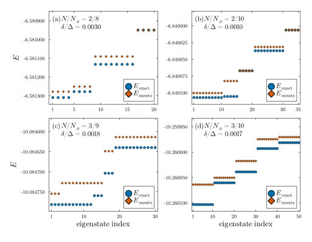
<figcaption class="paper-figure-caption"><b>Fig 1.</b> FIG. 1. Exact lowest-band-projected (Eexact) and ansatz-subspace (Eansatz) spectra for (N, Nϕ) = (2, 8), (2, 10), (3, 9), (3, 10), corresponding to ν = 1/4, 1/5, 1/3, 3/10. The respective raw-state counts and phys- ical ranks (Nraw, D) are (40, 20), (105, 35), (30, 30), (200, 50); the ranks equal both the observed quasidegeneracies and Eq. (5).</figcaption>
</figure>
<figure class="paper-figure-card">
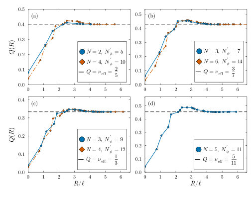
<figcaption class="paper-figure-caption"><b>Fig 2.</b> FIG. 2. Accumulated density depletion versus R/ℓaround one pinned quasihole. Panels (a)–(d) show (N, N ′ ϕ) = (2, 5), (4, 10); (3, 7), (6, 14); (3, 9), (4, 12); and (5, 11), with νeff = 2/5, 3/7, 1/3, and 5/11, respectively. Dashed lines mark Q = νeff; the filling in (d) is braided in Fig. 3. All panels use a pinning strength V/t = 1.</figcaption>
</figure>
<figure class="paper-figure-card">
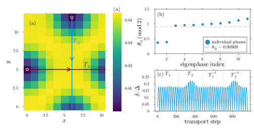
<figcaption class="paper-figure-caption"><b>Fig 3.</b> FIG. 3. AB-free quasihole braid at νeff = 5/11 with identical pin strengths V1 = V2 = 0.8t. (a) Initial subspace-averaged density; stars and arrows mark the quasihole positions and cross-shaped paths. (b) Berry eigenphases and their mean, in units of π; the dashed line is 2νeff = 10/11. (c) δ/∆along T1, T2, T −1 1 , T −1 2 ; dotted lines separate the four branches. The minima of δ/∆coincide with path points at which the quasi- holes are centered on lattice sites. Each elementary displace- ment of a quasihole is implemented by transferring the pin- ning potential between neighboring sites in discrete steps, low- ering its strength at the departure site while raising it at the destination...</figcaption>
</figure>
<figure class="paper-figure-card">
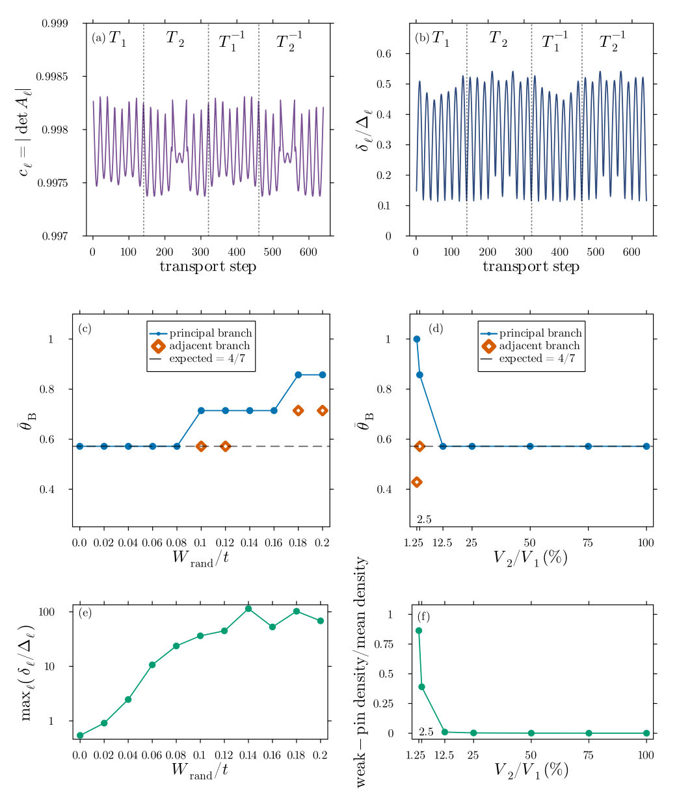
<figcaption class="paper-figure-caption"><b>Fig 4.</b> FIG. 1. Robustness diagnostics for the Aharonov–Bohm-free cross-shaped braid of N = 2 bosons on a 7 × 9 lattice with ϕ = 1/7, corresponding to Nϕ = 9. Two quasiholes are localized by the pinning potentials, giving a D = 14 manifold and νeff = N/(Nϕ −Nloc) = 2/7. The plotted mean θB takes the value 2νeff = 4/7. For the clean, symmetrically pinned system (V1 = V2 = 0.8t), panel (a) shows the overlap diagnostic cℓ= | det Aℓ|, while panel (b) shows the instantaneous bandwidth-to-gap ratio δℓ/∆ℓ. The vertical dotted lines separate the four transport segments. Panels (c) and (e) show, respectively, the mean phase and maxℓ(δℓ/∆ℓ) as a function of a random background potential of strength Wrand/t....</figcaption>
</figure>
</div>

<p><strong>Summary.</strong> This paper develops and validates a composite-boson ansatz to microscopically describe the low-energy states of lattice bosons exhibiting fractional quantum Hall physics at fillings less than 1/2. By calculating key topological invariants like Chern numbers and analyzing quasihole braiding, the authors establish a robust theoretical framework that successfully maps complex FQH behavior onto a manageable bosonic Hilbert space.</p>
<p><strong>Why it may be interesting.</strong> This work bridges concepts from strongly correlated electron physics (FQH states) with lattice models using bosonic descriptions. The explicit construction of a composite-boson basis provides a powerful theoretical tool for understanding topological order in condensed matter systems, which is relevant to AMO platforms simulating these interactions.</p>
<details>
<summary>Detailed structure</summary>
<p><strong>Main problem.</strong> The research aims to develop a microscopic composite-boson framework to describe the low-energy manifolds of fractional quantum Hall (FQH) systems realized on lattices at generic fillings $\nu < 1/2$. This moves beyond simple counting rules by providing a structured wave function ansatz.</p>
<p><strong>Main result.</strong> The proposed composite-boson ansatz successfully organizes the low-energy space, reproducing the expected manifold degeneracy and exhibiting characteristic fractional topological responses like quasihole density depletion and specific braiding phases.</p>
<p><strong>Method.</strong> The study employs constructing a many-body trial basis using a composite-boson ansatz derived from reduced-flux orbitals. Calculations involve variational Monte Carlo (VMC) for large systems and direct diagonalization for small ones to probe the spectrum and topological invariants.</p>
<p><strong>Model / system.</strong> The system is modeled by interacting bosons on a square lattice governed by the Hofstadter–Bose–Hubbard (HBH) model, studied on a torus geometry. The physics mimics FQH states at sub-half fillings ($\nu < 1/2$).</p>
<p><strong>Key observables.</strong> Many-body Chern number ($C_{	ext{MB}}$), quasihole charge diagnostic $Q(R)$, Aharonov–Bohm braiding phase $\theta_B$, and the low-energy manifold dimension (rank).</p>
<p><strong>Important parameters / regimes.</strong> Generic fillings $\nu < 1/2$; lattice parameters related to the Hofstadter model; reduced flux quantum numbers.</p>
<p><strong>Assumptions / limitations.</strong> The analysis assumes that the system's low-energy physics can be captured by a composite-boson wave function ansatz built from reduced-flux orbitals. VMC is used as a controlled numerical summation method for large systems.</p>
<p><strong>Figures summary.</strong> Figures compare exact and ansatz spectra, show density depletion plateaus matching $\nu_{	ext{eff}}$, and illustrate the mean Berry phase ($\theta_B$) matching $2\nu_{	ext{eff}}$ for quasihole braiding.</p>
<p><strong>Paper structure.</strong> The paper introduces the problem by noting the limitations of simple descriptions for FQH manifolds on lattices. It then details the composite-boson ansatz construction, validates it by reproducing known degeneracies and topological invariants (Chern numbers, braiding phases), and finally applies advanced numerical techniques like VMC to confirm results for larger systems.</p>
</details>
<details>
<summary>Abstract</summary>
<p>Hofstadter systems provide a lattice route to fractional quantum Hall physics, but their low-energy manifolds often lack simple wave-function descriptions. Here we present a composite-boson ansatz for a broad family of finite-size lattice-split Laughlin-quasihole manifolds in the low-flux Hofstadter--Bose--Hubbard model on a torus at generic fillings \(ν<1/2\). Attaching two vortices to each boson yields reduced-flux orbitals from which we construct a many-body trial basis. Its translation-resolved rank reproduces the expected low-energy-manifold dimension and provides a composite-boson interpretation of the established quasihole counting previously inferred from generalized exclusion rules and thin-torus arguments. For smaller systems, diagonalization within the lowest-band-projected ansatz span closely reproduces the exact projected spectrum, while variational Monte Carlo extends the rank and energetic analysis to larger systems for which explicit subspace construction becomes costly. To probe the fractional quantum Hall character of these manifolds, we calculate their many-body Chern-numbers and show that localized added-flux excitations exhibit quasihole-like behavior, with fractional density depletion and an Aharonov--Bohm-free braiding phase that both track the effective filling. Together, these results establish a microscopic composite-boson framework for organizing a broad family of sub-half-filled fractional quantum Hall manifolds of lattice bosons.</p>
</details>
<p><sub><a href="#top">↑ back to top</a></sub></p>

<p><a id="paper-2608.10722"></a></p>
<h3 id="two-component-ultracold-bose-gases-with-spin-orbit-coupling"><a href="http://arxiv.org/abs/2608.10722v1">Two-component ultracold Bose gases with spin-orbit coupling</a></h3>
<p><strong>Authors:</strong> G. I. Martone, S. Stringari<br>
<strong>Type:</strong> theory · <strong>Category:</strong> quantum gases · <strong>PDF:</strong> <a href="https://arxiv.org/pdf/2608.10722v1">https://arxiv.org/pdf/2608.10722v1</a><br>
<strong>Analysis basis:</strong> full PDF text, analyzed in chunks
<strong>Topic relevance:</strong> 🔥 <code>analog quantum simulation</code> <strong>4/5</strong> · <code>Keldysh / 2PI / non-Gaussian methods</code> <strong>1/5</strong> · <code>driven-dissipative phase transition</code> <strong>1/5</strong></p>
<div class="figure-strip-hint">↔ Scroll figures horizontally</div>
<div class="paper-figures-scroll">
<figure class="paper-figure-card">
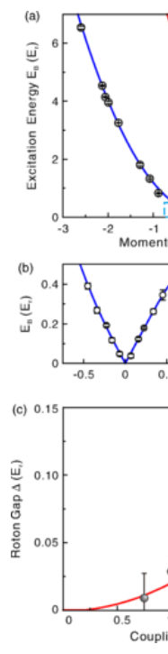
<figcaption class="paper-figure-caption"><b>Fig 1.</b> Fig. 3. – (a) Theoretical prediction for the lower (blue solid line) and upper (red solid line) branch of the Bogoliubov spectrum of a spin-orbit-coupled BEC in the PW phase with negative momentum. The circles represent the measured values. (b) Zoom on the bottom part of (a), where the roton-maxon structure in the lower branch is visible. (c) Predicted (solid line) and measured (circles) value of the roton gap as a function of the Raman coupling, showing its softening as ΩR approaches the critical value (9). From [36]. Reprinted figure with permission from Si-Cong Ji et al., Physical Review Letters 114, 105301 (2015). Copyright 2015 by the American Physical Society.</figcaption>
</figure>
<figure class="paper-figure-card">
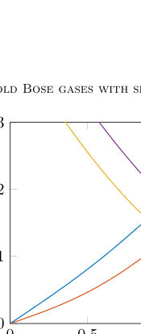
<figcaption class="paper-figure-caption"><b>Fig 2.</b> Fig. 5. – Lowest four bands of the Bogoliubov dispersion of a spin-orbit-coupled BEC in the stripe phase as functions of the quasimomentum. At small qx, the two lowest bands feature density (blue curve) and spin (red curve) phonon modes. Notice also the vanishing of their frequencies at the Brillouin point qx = 2k1. Adapted from [25] under the terms of the Creative Commons Attribution 4.0 International License (see http://creativecommons.org/licenses/by/4.0/).</figcaption>
</figure>
<figure class="paper-figure-card">
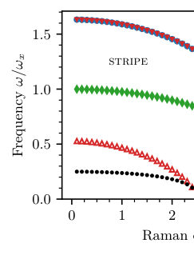
<figcaption class="paper-figure-caption"><b>Fig 3.</b> Fig. 6. – Frequency of the breathing mode (ωB), the spin-dipole mode (ωSD), and the center- of-mass (dipole) mode (ωD) of a trapped spin-orbit-coupled BEC as a function of the Raman coupling. The value of each frequency is deduced by looking at the oscillations of the center- of-mass coordinate, xc.m. = ⟨x⟩, the relative displacement of the two spin components, dx = ⟨xσz⟩, and the root-mean-square radius of the atomic cloud in the x direction, xrms = p</figcaption>
</figure>
</div>

<p><strong>Summary.</strong> This paper provides a comprehensive theoretical study of two-component Bose-Einstein condensates with spin-orbit coupling. It maps out a complex phase diagram featuring stripe, plane-wave, and single-minimum phases, demonstrating that SOC profoundly modifies superfluidity and rotational dynamics. The research highlights the emergence of supersolid character in the stripe phase through detailed analysis of excitation spectra.</p>
<p><strong>Why it may be interesting.</strong> This work is highly relevant as it explores how engineered synthetic gauge fields (SOC) fundamentally alter the macroscopic quantum phases and collective excitations of ultracold atomic gases, touching upon supersolidity and symmetry breaking in a controllable platform.</p>
<details>
<summary>Detailed structure</summary>
<p><strong>Main problem.</strong> The study investigates Bose-Einstein condensates (BECs) subjected to Raman-induced spin-orbit coupling (SOC), focusing on the complex phase diagram and dynamic properties arising from the interplay between SOC, single-particle dispersion, and interatomic interactions.</p>
<p><strong>Main result.</strong> The system exhibits three distinct quantum phases—stripe, plane-wave, and single-minimum—whose characteristics are deeply modified by SOC. The stripe phase is particularly notable for exhibiting supersolid behavior.</p>
<p><strong>Method.</strong> Theoretical analysis employs mean-field theory via the Gross-Pitaevskii equation (GPE) and analyzes excitations using Bogoliubov theory to characterize different quantum phases.</p>
<p><strong>Model / system.</strong> The system models two-component ultracold Bose gases realized with Raman coupling, leading to an effective spin-1/2 Hamiltonian. The single-particle dispersion can feature a double-minimum structure depending on the SOC strength ($\Omega_R$).</p>
<p><strong>Key observables.</strong> Superfluid density ($
ho_s/
ho$), moment of inertia ($\Theta$), Bogoliubov excitation frequencies (e.g., breathing mode, spin-dipole mode), and the stripe phase fringe contrast.</p>
<p><strong>Important parameters / regimes.</strong> SOC strength ($\Omega_R$), detuning ($\delta_R$), Raman coupling ($k_R$), and interaction strengths ($g_{dd}, g_{ss}$).</p>
<p><strong>Assumptions / limitations.</strong> The analysis relies on mean-field theory (GPE) and utilizes variational Ansätze for the infinite system, which are approximations.</p>
<p><strong>Figures summary.</strong> Figures illustrate the single-particle energy dispersion ($\varepsilon_{\pm}(p)$) showing double minima, a phase diagram mapping Stripe, Plane-wave, and Single-minimum phases, and plots of collective mode frequencies (e.g., $\omega_B$, $\omega_{SD}$) versus coupling strength.</p>
<p><strong>Paper structure.</strong> The paper progresses from introducing the SOC Hamiltonian and the resulting complex phase diagram to analyzing ground state properties using variational methods. It then delves into dynamic measurements like superfluid density, rotational response, and finally examines the distinct phonon modes characterizing each quantum phase.</p>
</details>
<details>
<summary>Abstract</summary>
<p>These lecture notes provide an introduction to Bose-Einstein condensates with Raman-induced spin-orbit coupling. Owing to the interplay between the peculiar single-particle dispersion, featuring a double-minimum structure, and the two-body interaction, these systems possess a complex phase diagram. Three different quantum phases can be observed, i.e., a stripe, a plane-wave, and a single-minimum phase, each characterized by different broken symmetries. The condensate dynamics is also significantly affected by the spin-orbit coupling, as revealed by the behavior of the Bogoliubov spectrum in infinite systems and the behavior of the discretized collective mode frequencies in trapped configurations, especially close to the phase transitions. In turn, the superfluid and rotational properties are also deeply modified by the coupling between the motional and spin degree of freedom. Finally, a special attention is devoted to the stripe phase and its supersolid character, which can be clearly revealed by the study of its dynamic features.</p>
</details>
<p><sub><a href="#top">↑ back to top</a></sub></p>

<p><a id="paper-2608.10958"></a></p>
<h3 id="spin-splitter-without-spin-split-bands-a-reconfigurable-altermagnetic-texture"><a href="http://arxiv.org/abs/2608.10958v1">Spin Splitter without Spin-Split Bands: A Reconfigurable Altermagnetic Texture</a></h3>
<p><strong>Authors:</strong> Bin Xi, Jie Lu, Qiang Luo, Ken Chen, Jia-Wei Mei, Hong-Gang Luo, Jize Zhao<br>
<strong>Type:</strong> theory · <strong>Category:</strong> strongly correlated electrons · <strong>PDF:</strong> <a href="https://arxiv.org/pdf/2608.10958v1">https://arxiv.org/pdf/2608.10958v1</a><br>
<strong>Analysis basis:</strong> full PDF text, analyzed in chunks
<strong>Topic relevance:</strong> 🔥 <code>analog quantum simulation</code> <strong>4/5</strong> · <code>Keldysh / 2PI / non-Gaussian methods</code> <strong>1/5</strong></p>
<div class="figure-strip-hint">↔ Scroll figures horizontally</div>
<div class="paper-figures-scroll">
<figure class="paper-figure-card">
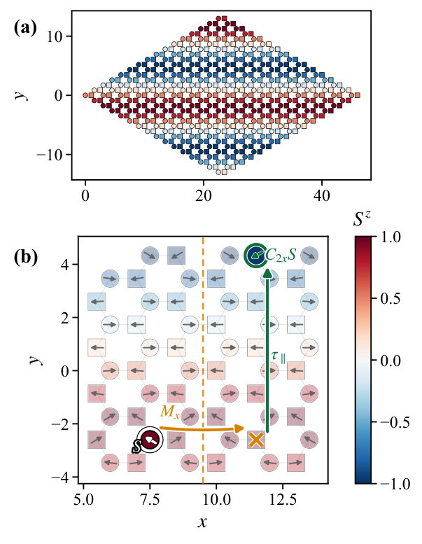
<figcaption class="paper-figure-caption"><b>Fig 1.</b> FIG. 1. Representative counter-spiral texture. The two sublattices carry single-Q helices of op-</figcaption>
</figure>
<figure class="paper-figure-card">
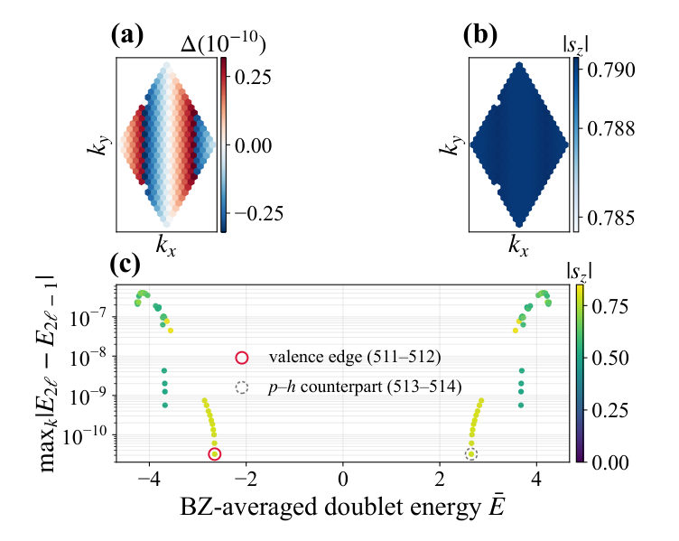
<figcaption class="paper-figure-caption"><b>Fig 2.</b> FIG. 2. Band diagnostics, 16×16 k mesh. (a) Signed splitting ∆(k) of the valence-edge doublet</figcaption>
</figure>
<figure class="paper-figure-card">
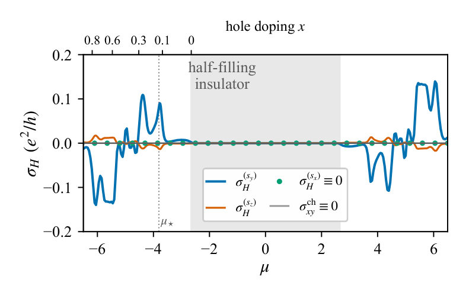
<figcaption class="paper-figure-caption"><b>Fig 3.</b> FIG. 3. Doped spin splitter without spin-split bands. Fixed-texture µ sweep for the reference</figcaption>
</figure>
<figure class="paper-figure-card">
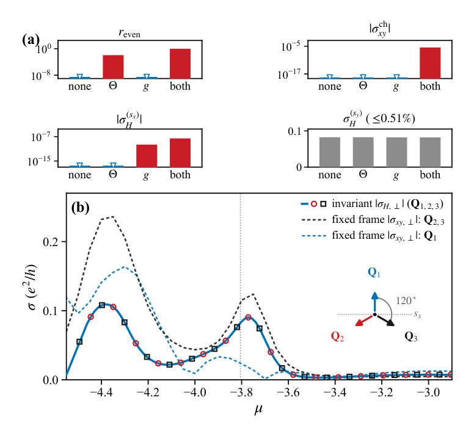
<figcaption class="paper-figure-caption"><b>Fig 4.</b> FIG. 4. Two-element protection and Q reconfiguration. (a) Four-sector test at µ⋆versus the</figcaption>
</figure>
</div>

<p><strong>Summary.</strong> This theoretical study proposes a novel mechanism for realizing the spin splitter effect in altermagnetic materials by exploiting symmetry constraints rather than relying on traditional band splitting. By analyzing a frustrated honeycomb magnet, the authors show that hole doping can induce this pure spin current response while maintaining zero charge Hall conductivity. This work is significant because it provides a robust, symmetry-protected route to engineered topological transport phenomena.</p>
<p><strong>Why it may be interesting.</strong> The work provides a deep symmetry-based understanding of topological magnetotransport phenomena, showing how fundamental crystalline symmetries can enforce exotic quantum responses (like zero charge Hall response) even when spectral features are suppressed. This links condensed matter theory to programmable physical platforms like photonics.</p>
<details>
<summary>Detailed structure</summary>
<p><strong>Main problem.</strong> The research aims to demonstrate a spin-splitter effect—converting an electric field into a pure transverse spin current without charge response—in altermagnetic materials without relying on conventional crystal-fixed spin-split bands.</p>
<p><strong>Main result.</strong> Hole doping in the model realizes this spin splitter using an odd-parity residual, achieving a finite spin Hall conductivity ($\sigma_{sy}^H=0.082\,e^2/h$) while maintaining zero charge Hall response ($\sigma_{ch}^{xy}=0$).</p>
<p><strong>Method.</strong> The analysis uses symmetry constraints derived from specific Spin-Space-Group elements (an antitranslation $\Theta$ and a helicity mirror $g$) applied to an $s$-$d$ Hamiltonian describing itinerant electrons coupled to a classical spin texture.</p>
<p><strong>Model / system.</strong> The system is modeled as a frustrated honeycomb magnet exhibiting a noncoplanar counter-spiral ground state. The physics is analyzed by examining how the symmetry elements $\Theta$ and $g$ constrain band splitting and transport responses.</p>
<p><strong>Key observables.</strong> Spin-splitter conductivity ($\sigma_{sy}^H$), Charge Hall response ($\sigma_{ch}^{xy}$), Band splitting ($\Delta(k)$), and polarization axis rotation angle ($120^\circ$).</p>
<p><strong>Important parameters / regimes.</strong> The residual hopping term (odd-parity) below $2	imes 10^{-7} t$ at the Fermi level, and the specific value $\sigma_{sy}^H = 0.082\,e^2/h$.</p>
<p><strong>Assumptions / limitations.</strong> The analysis assumes coupling itinerant electrons to a preformed classical spin texture via an $s$-$d$ Hamiltonian, and that the symmetry constraints ($\Theta$ and $g$) are robustly applicable.</p>
<p><strong>Figures summary.</strong> Figures illustrate the counter-spiral magnetization texture, the calculated signed band splitting $\Delta(k)$ showing small spectral separation, and plots demonstrating the finite spin Hall conductivity at optimal doping while keeping the charge Hall zero.</p>
<p><strong>Paper structure.</strong> The paper establishes the theoretical framework by identifying symmetry elements ($\Theta$ and $g$) that govern altermagnetism. It then develops the core argument that these symmetries dictate transport properties, culminating in the crucial finding about hole doping realizing the spin splitter without band splitting, followed by discussions on reconfigurability.</p>
</details>
<details>
<summary>Abstract</summary>
<p>The altermagnetic spin-splitter effect converts an electric field into a transverse pure spin current, with no net magnetization and no charge-Hall counterpart. In established materials this function is tied to crystal-fixed spin-split bands that lock the polarization axis to the lattice. We show that the noncoplanar counter-spiral ground state of a frustrated honeycomb magnet instead carries the altermagnetic operation through a $\mathbf Q$-locked helicity mirror $g$. The mirror selects the spin-current polarization and forbids the perpendicular one, while an antitranslation $Θ$ forbids even-parity spin splitting. Band splitting and spin-splitter response therefore rest on different symmetry elements. Either element alone enforces the charge-Hall zero---a redundancy absent from other spin--orbit-free noncollinear routes---and a charge Hall appears only when both elements are removed. Hole doping then realizes a \emph{spin splitter without spin-split bands}---the symmetry-allowed odd-parity residual below $2\times10^{-7}$ of the hopping $t$ at the Fermi level---with $σ_H^{(s_y)}=0.082\,e^2/h$ without spin--orbit coupling and with zero charge Hall response. Selecting among the three degenerate $\mathbf{Q}$ orientations rotates the polarization axis in exact $120^\circ$ steps at fixed magnitude and charge-Hall zero; the selection rules persist in a $32$-site cell accessible to programmable photonic and circuit lattices.</p>
</details>
<p><sub><a href="#top">↑ back to top</a></sub></p>

<p><a id="paper-2608.10352"></a></p>
<h3 id="equilibrium-distributions-for-strongly-nonlinear-many-body-systems"><a href="http://arxiv.org/abs/2608.10352v1">Equilibrium Distributions for Strongly Nonlinear Many-Body Systems</a></h3>
<p><strong>Authors:</strong> Jialin Zhang, Yong Zhang, Hong Zhao<br>
<strong>Type:</strong> theory · <strong>Category:</strong> statistical mechanics · <strong>PDF:</strong> <a href="https://arxiv.org/pdf/2608.10352v1">https://arxiv.org/pdf/2608.10352v1</a><br>
<strong>Analysis basis:</strong> full PDF text, analyzed in chunks
<strong>Topic relevance:</strong> <code>Frenkel-Kontorova</code> <strong>3/5</strong> · <code>Keldysh / 2PI / non-Gaussian methods</code> <strong>3/5</strong> · <code>analog quantum simulation</code> <strong>2/5</strong> · <code>driven-dissipative phase transition</code> <strong>2/5</strong> · <code>methods for driven-dissipative</code> <strong>2/5</strong> · <code>non-equilibrium universality</code> <strong>2/5</strong> · <code>correlated / nonlocal dissipation</code> <strong>1/5</strong> · <code>scars &amp; prethermalization</code> <strong>1/5</strong></p>
<div class="figure-strip-hint">↔ Scroll figures horizontally</div>
<div class="paper-figures-scroll">
<figure class="paper-figure-card">
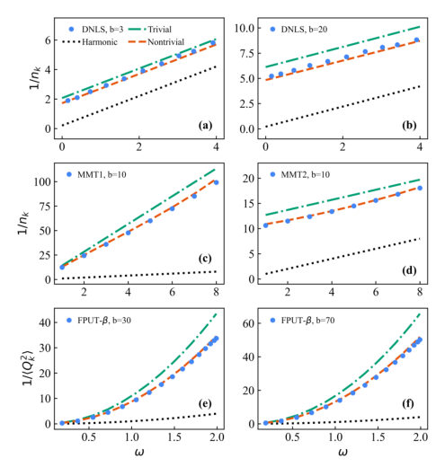
<figcaption class="paper-figure-caption"><b>Fig 1.</b> FIG. 1. Comparison between numerical results (solid cir- cles) and the harmonic-approaxmation prediction (black dot- ted line), the trivial-resonance prediction (green dash-dotted line), and our full theoretical prediction including nontrivial- resonance corrections (red dashed line). Panels (a,b): DNLS equation with b = 3 and b = 20; (c): MMT1 with b = 10; (d): MMT2 with b = 10; and (e,f): FPUT-β with b = 30 and b = 70.</figcaption>
</figure>
<figure class="paper-figure-card">
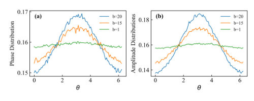
<figcaption class="paper-figure-caption"><b>Fig 2.</b> FIG. 2. Phase distribution (a) and amplitude distribu- tion (b) for a representative nontrivial resonant quartet (k1, k2, k3, k4) = (3, 4, 2, 5) at different nonlinearity strengths. The curves at θ = π correspond, from top to bottom, to b = 20, b = 15, and b = 1, respectively.</figcaption>
</figure>
<figure class="paper-figure-card">
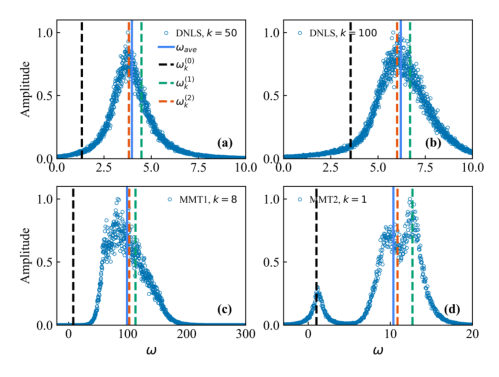
<figcaption class="paper-figure-caption"><b>Fig 3.</b> FIG. 3. For the DNLS equation at b = 7 for k = 50 (a) and k = 100 (b); MMT1 model at b = 10, k = 8 (c); MMT2 model at b = 10, k = 1 (d): Frequency spectrum (dots), average fre- quency (blue solid line), harmonic approximation prediction frequency (black dashed line), trivial-resonance frequency pre- diction (green dashed line), and our frequency prediction (red dashed line). Spectra are normalized by their peak values.</figcaption>
</figure>
</div>

<p><strong>Summary.</strong> This paper presents a novel theoretical framework based on the generalized energy equipartition principle to calculate equilibrium distributions in strongly nonlinear many-body systems. It overcomes the limitations of weak-coupling approximations by employing a generating functional approach applicable even when interactions are highly correlated. The method is validated across several models, demonstrating quantitative agreement with simulations where conventional theories fail.</p>
<p><strong>Why it may be interesting.</strong> This work provides advanced tools for analyzing nonlinear dynamics in condensed matter systems, which is highly relevant to understanding energy transport and thermalization in quantum materials where simple perturbative treatments fail.</p>
<details>
<summary>Detailed structure</summary>
<p><strong>Main problem.</strong> The primary goal is developing a general analytical framework to determine equilibrium distributions for many-body systems exhibiting strong nonlinearities, overcoming the limitations of conventional theories restricted to weak interactions.</p>
<p><strong>Main result.</strong> The proposed generalized energy equipartition principle (GEEP) framework successfully calculates accurate corrections for strongly nonlinear regimes, significantly outperforming approximations based on harmonic or trivial resonances.</p>
<p><strong>Method.</strong> The approach utilizes a generating functional Z(J) combined with the GEEP to calculate correlation functions and derive equilibrium distribution functions across both weak and strong nonlinearity limits.</p>
<p><strong>Model / system.</strong> The theory is applied to nonlinear lattice systems, including the discrete nonlinear Schrödinger (DNLS) equation, the Majda–McLaughlin–Tabak (MMT) model, and the Fermi–Pasta–Ulam–Tsingou-$eta$ (FPUT-$eta$) model.</p>
<p><strong>Key observables.</strong> Equilibrium distribution functions ($n_k$), renormalized dispersion relations ($\omega^{(2)}_k$), average frequency ($ar{\omega}_k$), and phase/amplitude distributions for resonance terms.</p>
<p><strong>Important parameters / regimes.</strong> The nonlinearity strength parameter ($b$ or $eta$) is critical, as the method's utility increases in regimes where $b$ is large (strong nonlinearities).</p>
<p><strong>Assumptions / limitations.</strong> Conventional methods fail when residual interactions develop significant correlations and deviate from Gaussian statistics; the framework assumes applicability across both weak and strong nonlinearity limits.</p>
<p><strong>Figures summary.</strong> Figure 1 compares numerical results for DNLS, MMT, and FPUT-$eta$ models against predictions from harmonic, trivial-resonance, and full theoretical methods. Figure 3 compares frequency spectra ($\omega^{(2)}_k$) derived from the theory against simulations across various nonlinearity strengths.</p>
<p><strong>Paper structure.</strong> The paper introduces the problem by contrasting weak vs. strong nonlinearity regimes. It develops the GEEP framework using a generating functional approach to calculate correlation functions, deriving corrections for non-trivial resonances. Finally, it validates these predictions by comparing theoretical results (e.g., frequency spectra) against numerical simulations for several canonical models.</p>
</details>
<details>
<summary>Abstract</summary>
<p>Obtaining equilibrium distributions of nonlinear systems is essential for accurately computing macroscopic observables. Conventional theoretical corrections are typically limited to weak nonlinearities, where interaction terms can be treated as effectively uncorrelated perturbations and the random phase approximation applies. In this Letter, we develop a framework to determine equilibrium distributions based on the generalized energy equipartition principle. Our approach recovers existing corrections in the weakly nonlinear regime and, crucially, remains valid for strong nonlinearities, where perturbative contributions become correlated and conventional approaches break down. Numerical simulations of the nonlinear Schrödinger equation, the Majda-McLaughlin-Tabak model, and the Fermi-Pasta-Ulam-Tsingou model demonstrate accurate corrections for nonlinearities more than an order of magnitude stronger than those accessible to conventional theories.</p>
</details>
<p><sub><a href="#top">↑ back to top</a></sub></p>

<p><a id="paper-2608.10789"></a></p>
<h3 id="resource-bounded-controllability-benchmarking-of-open-quantum-systems"><a href="http://arxiv.org/abs/2608.10789v1">Resource-bounded controllability benchmarking of open quantum systems</a></h3>
<p><strong>Authors:</strong> Yule Mayevsky, Akram Youssry, Alberto Peruzzo<br>
<strong>Type:</strong> theory · <strong>Category:</strong> quantum information and computing · <strong>PDF:</strong> <a href="https://arxiv.org/pdf/2608.10789v1">https://arxiv.org/pdf/2608.10789v1</a><br>
<strong>Analysis basis:</strong> full PDF text, analyzed in chunks
<strong>Topic relevance:</strong> <code>driven-dissipative phase transition</code> <strong>3/5</strong> · <code>methods for driven-dissipative</code> <strong>3/5</strong> · <code>QC/QI experiment</code> <strong>2/5</strong> · <code>non-equilibrium universality</code> <strong>2/5</strong> · <code>quantum measurements</code> <strong>2/5</strong> · <code>Keldysh / 2PI / non-Gaussian methods</code> <strong>1/5</strong> · <code>analog quantum simulation</code> <strong>1/5</strong> · <code>correlated / nonlocal dissipation</code> <strong>1/5</strong> · <code>scars &amp; prethermalization</code> <strong>1/5</strong></p>
<div class="figure-strip-hint">↔ Scroll figures horizontally</div>
<div class="paper-figures-scroll">
<figure class="paper-figure-card">
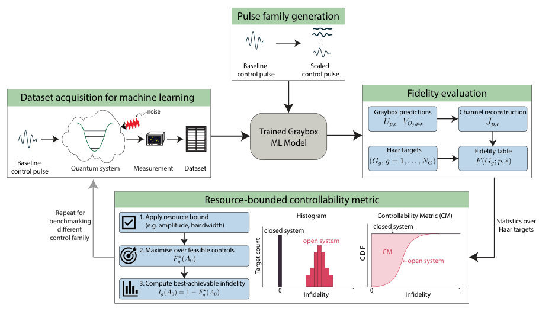
<figcaption class="paper-figure-caption"><b>Fig 1.</b> FIG. 1: Overview of the graybox controllability workflow. Experimental pulse–response data are first collected and used to train a graybox surrogate model. Each baseline pulse is then expanded into constrained variants by scaling selected pulse parameters such as amplitude or bandwidth. For each variant, the trained graybox predicts the corresponding dynamics, including both the coherent unitary part and the noise contribution, allowing the effective implemented channel to be reconstructed. These implemented channels are then compared against Haar-random target gates through process fidelity. By maximising fidelity over the feasible pulse family for each target, the method builds a...</figcaption>
</figure>
<figure class="paper-figure-card">
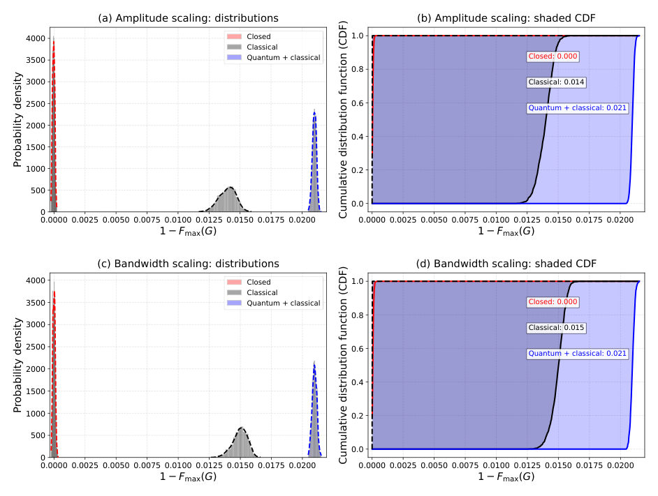
<figcaption class="paper-figure-caption"><b>Fig 2.</b> FIG. 2: One-dimensional resource-bounded controllability studies. Distributions and empirical cumulative distribution functions of the best achievable infidelity 1 −Fmax(G) over the Haar-random target-gate ensemble. The amplitude study varies the waveform amplitude resource, while the Gaussian-width study varies the common temporal width σ, which acts as the bandwidth-related resource coordinate. Results are shown for the closed-system, classical-noise, and combined quantum-plus-classical-noise regimes. The shaded regions in the CDF panels represent the area used to calculate the corresponding controllability measure.</figcaption>
</figure>
<figure class="paper-figure-card">
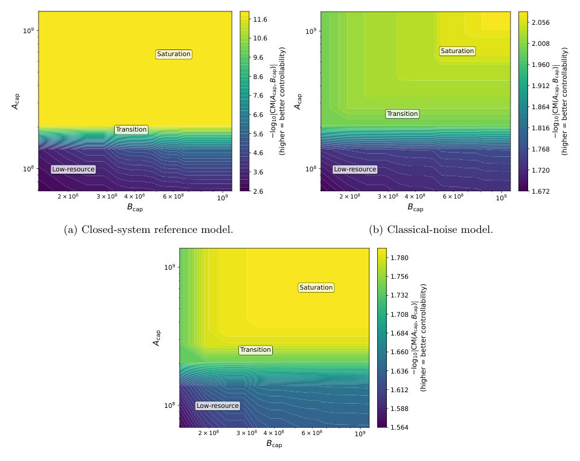
<figcaption class="paper-figure-caption"><b>Fig 3.</b> FIG. 3: Two-dimensional controllability surfaces under joint amplitude and bandwidth caps. For each cap pair (Acap, Bcap), the admissible pulse family is first defined by the feasible-set condition from the methodology. For each Haar-random target gate, the best feasible fidelity is then computed over that admissible family, converted to a best-achievable infidelity, and aggregated into the area-based controllability metric CM(Acap, Bcap). The plotted quantity is −log10  CM(Acap, Bcap)  , so larger values indicate improved controllability. The annotations indicate qualitative resource regimes: low-resource, where performance is resource-limited; transition, where controllability improves...</figcaption>
</figure>
</div>

<p><strong>Summary.</strong> The authors introduce a novel, resource-bounded framework to benchmark the true controllability of open quantum systems. They use a graybox machine learning model trained on experimental data to predict gate fidelity under realistic constraints like limited pulse amplitude and bandwidth. This allows researchers to map out an 'operational map' showing exactly how much performance is lost due to noise versus hardware limitations.</p>
<p><strong>Why it may be interesting.</strong> This work provides a highly practical, data-driven metric for assessing quantum hardware performance that explicitly incorporates resource costs (like pulse power or bandwidth) alongside environmental decoherence.</p>
<details>
<summary>Detailed structure</summary>
<p><strong>Main problem.</strong> The paper addresses the challenge of evaluating practical quantum gate fidelity in open systems, moving beyond idealized Hamiltonian models to account for hardware limitations.</p>
<p><strong>Main result.</strong> Controllability is characterized by resource-bounded surfaces (e.g., amplitude vs. bandwidth) that quantify achievable process fidelity under explicit noise and control constraints.</p>
<p><strong>Method.</strong> A graybox machine learning model is trained on probing data to predict open-system distortions, allowing the reconstruction of implemented quantum channels for fidelity benchmarking.</p>
<p><strong>Model / system.</strong> The system is an open quantum system (demonstrated on a driven qubit) whose dynamics are governed by Hamiltonians incorporating drift, control fields, and various noise sources (classical or combined quantum/classical).</p>
<p><strong>Key observables.</strong> Process fidelity; distribution of best-achievable infidelities; Controllability Metric (CM); two-dimensional controllability surfaces.</p>
<p><strong>Important parameters / regimes.</strong> Control resources such as pulse amplitude ($A_{cap}$) and bandwidth ($    ext{BW}_{cap}$); noise parameters ($\alpha_1, \alpha_2, \gamma$ rates).</p>
<p><strong>Assumptions / limitations.</strong> The graybox model is assumed valid only over the bounded region of control space defined by its training data; results are conditional on the chosen pulse family parametrization.</p>
<p><strong>Figures summary.</strong> Figures illustrate workflow (data collection to fidelity evaluation) and, crucially, two-dimensional controllability surfaces showing how noise deforms the achievable gate performance landscape as a function of resource caps.</p>
<p><strong>Paper structure.</strong> The paper develops a framework by first defining the problem (practical vs. ideal control), then detailing the graybox ML methodology for channel reconstruction under constraints, and finally presenting quantitative benchmarks across various noise regimes using area-based metrics.</p>
</details>
<details>
<summary>Abstract</summary>
<p>This paper develops a resource-bounded framework for evaluating practical controllability in open quantum systems using a trained graybox response model. Rather than treating controllability as a binary property of an idealised Hamiltonian model, the proposed approach evaluates the best-achievable process fidelity over a finite, hardware-realisable pulse family under explicit control constraints. The graybox model retains the known coherent dynamics while learning control-dependent open-system distortions from pulse-response data. The resulting surrogate predictions are used to reconstruct the implemented processes and compare them with Haar-random target gates. Practical controllability is then characterised through the distribution of best-achievable infidelities and an area-based summary metric. The framework is demonstrated for a driven qubit under closed-system, classical-noise, and combined quantum-plus-classical-noise dynamics, with pulse amplitude and inverse Gaussian width used as the control-resource coordinates. The results show how finite control resources and open-system noise jointly constrain the gate performance attainable by the chosen pulse family.</p>
</details>
<p><sub><a href="#top">↑ back to top</a></sub></p>

<p><a id="paper-2608.11073"></a></p>
<h3 id="a-dynamical-mechanism-for-irreversibility-in-cyclically-driven-amorphous-solids"><a href="http://arxiv.org/abs/2608.11073v1">A Dynamical Mechanism for Irreversibility in Cyclically Driven Amorphous Solids</a></h3>
<p><strong>Authors:</strong> Sauvik Chatterjee, Asaf Szulc, Ido Regev<br>
<strong>Type:</strong> theory · <strong>Category:</strong> disordered systems and neural networks · <strong>PDF:</strong> <a href="https://arxiv.org/pdf/2608.11073v1">https://arxiv.org/pdf/2608.11073v1</a><br>
<strong>Analysis basis:</strong> full PDF text, analyzed in chunks
<strong>Topic relevance:</strong> <code>driven-dissipative phase transition</code> <strong>3/5</strong> · <code>methods for driven-dissipative</code> <strong>3/5</strong> · <code>non-equilibrium universality</code> <strong>3/5</strong> · <code>Frenkel-Kontorova</code> <strong>2/5</strong> · <code>analog quantum simulation</code> <strong>1/5</strong> · <code>correlated / nonlocal dissipation</code> <strong>1/5</strong> · <code>quantum measurements</code> <strong>1/5</strong> · <code>scars &amp; prethermalization</code> <strong>1/5</strong></p>
<div class="figure-strip-hint">↔ Scroll figures horizontally</div>
<div class="paper-figures-scroll">
<figure class="paper-figure-card">
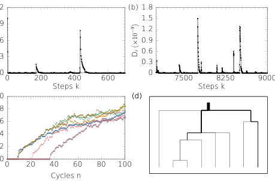
<figcaption class="paper-figure-caption"><b>Fig 1.</b> FIG. 1. (a) Mean Euclidean distance of a trajectory per- turbed from a limit-cycle as a function of the number of AQS strain steps k (note that y-axis is rescaled by a factor of 10−9). The initial perturbation decays exponentially, but new, tiny, perturbations emerge intermittently. However, those pertur- bations also exhibit exponential decay which means that the limit cycle is stable. (b) Mean Euclidean distance of two ini- tially close trajectories in the post-yield regime. Even in this case, where the trajectory never becoms periodic, we can see that perturbations decay exponentially, indicating that the trajectory is locally stable. (c) The mean Euclidean distance after n forcing...</figcaption>
</figure>
<figure class="paper-figure-card">
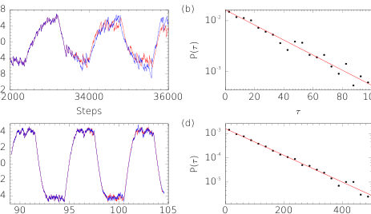
<figcaption class="paper-figure-caption"><b>Fig 2.</b> FIG. 2. (a) Trajectory separation in the particle-based sim- ulations as reflected in the total stress. The stress in the reference trajectory is shown in blue while the perturbed tra- jectory is shown in red. Up to a certain simulation step, the stress in the perturbed system is identical to the stress in the reference systems, but the two show clear separation starting from the ∼33500 step. (b) Waiting-time (in number of cy- cles τ) distribution in the particle-based simulations exhibit- ing an exponential distribution. (c) Trajectory separation in the soft-spot model (at accumulated strain ∼97) as reflected in the total stress, where colors represent the same as in (a). (d) Waiting-time...</figcaption>
</figure>
<figure class="paper-figure-card">
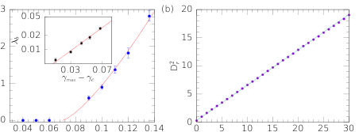
<figcaption class="paper-figure-caption"><b>Fig 3.</b> FIG. 3. (a) Steady-state branching rate for different strain amplitudes γmax with a power-law fit. For each post-yield strain amplitude we averaged over 100 reference configura- tions, each perturbed 10 times, which were run starting from a steady-state configuration. For each sub-yield strain ampli- tude we verified that λb = 0 for 100 realizations, each per- turbed 10 times and running for 100 cycles. Inset: post yield values on a log-log scale demonstrating the post-yield power law behavior. (b) Averaged mean square Euclidean distance in the particle based simulations exhibiting clear diffusive sep- aration (line is a linear fit). Error bars are too small to be visible.</figcaption>
</figure>
<figure class="paper-figure-card">
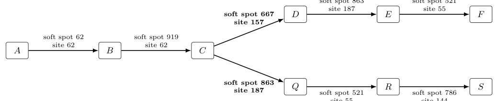
<figcaption class="paper-figure-caption"><b>Fig 4.</b> FIG. 4. An example of the beginning of a trajectory branching observed in the soft-spot model. The reference and perturbed trajectories visit the same sequence of configurations up to state C. At state C, a small perturbation reverses the ordering of two competing instabilities. In the reference trajectory, soft spot 667 at site 157 is activated first, whereas in the perturbed trajectory soft spot 863 at site 187 is activated first. This difference modifies the subsequent stress redistribution and results in different sequences of plastic events and sustained trajectory separation.</figcaption>
</figure>
<figure class="paper-figure-card">
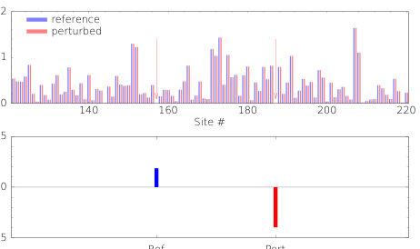
<figcaption class="paper-figure-caption"><b>Fig 5.</b> FIG. 5. (a) Distances to instability xi = σ+ i −σi for state C, immediately before the branching event. Sites 157 and 187, marked by the arrows, are the only sites with negative values of xi and form a nearly-degenerate pair of competing insta- bilities. (b) Competition variable ∆= x187 −x157. In the reference trajectory ∆&gt; 0, indicating that site 157 is more unstable and is therefore activated first. In the perturbed tra- jectory ∆&lt; 0, indicating that site 187 is activated first. The perturbation therefore changes the ordering of the competing instabilities and initiates trajectory branching.</figcaption>
</figure>
</div>

<p><strong>Summary.</strong> This work identifies 'instability-selection-induced branching' as the dynamical source of irreversibility in amorphous solids when they yield under cyclic stress. By comparing particle simulations to a soft-spot model, the authors rule out chaos and demonstrate that the system's path dependence is governed by rare events where competing plastic instabilities dictate the sequence of subsequent structural rearrangements.</p>
<p><strong>Why it may be interesting.</strong> While focused on classical amorphous solids, the concept of instability selection leading to non-equilibrium path dependence (memory/hysteresis) has parallels in understanding decoherence or dissipation mechanisms in open quantum systems where system evolution is constrained by local minima or metastable states.</p>
<details>
<summary>Detailed structure</summary>
<p><strong>Main problem.</strong> The study addresses the fundamental dynamical mechanism responsible for irreversibility when amorphous solids transition from reversible periodic dynamics to irreversible diffusive dynamics upon yielding under cyclic shear.</p>
<p><strong>Main result.</strong> Irreversibility is shown to arise not from chaotic sensitivity to initial conditions, but from 'instability-selection-induced branching' events occurring during plastic activity.</p>
<p><strong>Method.</strong> The authors employed both particle-based simulations (Kob-Andersen model) and a coarse-grained mean-field soft-spot model to analyze trajectory separation dynamics.</p>
<p><strong>Model / system.</strong> The system is amorphous solids subjected to athermal quasistatic oscillatory shear. The theoretical framework utilizes a soft-spot model where plasticity is governed by the competition between nearly-degenerate local instabilities (soft spots).</p>
<p><strong>Key observables.</strong> Trajectory separation distance ($D_r(n)$), waiting-time distributions for branching events, and Mean Square Displacement ($\Delta R_n$) scaling.</p>
<p><strong>Important parameters / regimes.</strong> Critical strain amplitude ($\gamma_{	ext{max}}$) marking the yield transition; perturbation size ($\delta$); soft spot thresholds ($\sigma+_n, \sigma-_n$).</p>
<p><strong>Assumptions / limitations.</strong> The analysis assumes that trajectory separation after branching follows diffusive scaling, and that waiting times between plastic events can be modeled by an exponential distribution.</p>
<p><strong>Figures summary.</strong> Figures illustrate the decay of perturbations (ruling out chaos), the clear onset of irreversible dynamics via persistent trajectory branching, and the linear scaling ($\propto n$) of Mean Square Displacement confirming diffusion after these branching events.</p>
<p><strong>Paper structure.</strong> The paper first establishes that standard chaotic diagnostics fail to explain irreversibility. It then introduces the soft-spot model to show how competition between instabilities causes stochastic 'branching' in the configuration space, which is identified as the source of irreversible dynamics, followed by confirmation using diffusive scaling measurements.</p>
</details>
<details>
<summary>Abstract</summary>
<p>Amorphous solids subjected to athermal quasistatic oscillatory shear undergo a transition from periodic reversible dynamics to irreversible diffusive dynamics at yielding. How irreversibility arises in such deterministic, dissipative dynamics remains unclear. Here we show that trajectories remain locally stable, with perturbations decaying rather than growing even in the irreversible regime, ruling out the sustained exponential sensitivity to initial conditions associated with chaotic dynamics. Rather than diverging continuously, nearby trajectories initially remain close before eventually separating through rare branching events, after which their separation grows diffusively. A mean-field soft-spot model reproduces the same branching statistics and reveals their microscopic origin. We find that branching originates from competition between nearly-degenerate plastic instabilities, in which a small perturbation changes which instability activates first and thereby alters the subsequent sequence of plastic events. These results identify instability-selection-induced branching as a dynamical mechanism for irreversibility in cyclically driven amorphous solids.</p>
</details>
<p><sub><a href="#top">↑ back to top</a></sub></p>

<p><a id="paper-2608.10110"></a></p>
<h3 id="non-equilibrium-theory-of-projected-ensembles"><a href="http://arxiv.org/abs/2608.10110v1">Non-equilibrium theory of projected ensembles</a></h3>
<p><strong>Authors:</strong> Fabio Anza, Cameron Hahn<br>
<strong>Type:</strong> theory · <strong>Category:</strong> statistical mechanics · <strong>PDF:</strong> <a href="https://arxiv.org/pdf/2608.10110v1">https://arxiv.org/pdf/2608.10110v1</a><br>
<strong>Analysis basis:</strong> full PDF text, analyzed in chunks
<strong>Topic relevance:</strong> <code>correlated / nonlocal dissipation</code> <strong>3/5</strong> · <code>methods for driven-dissipative</code> <strong>3/5</strong> · <code>quantum measurements</code> <strong>3/5</strong> · <code>Keldysh / 2PI / non-Gaussian methods</code> <strong>2/5</strong> · <code>non-equilibrium universality</code> <strong>2/5</strong> · <code>driven-dissipative phase transition</code> <strong>1/5</strong></p>
<div class="figure-strip-hint">↔ Scroll figures horizontally</div>
<div class="paper-figures-scroll">
<figure class="paper-figure-card">
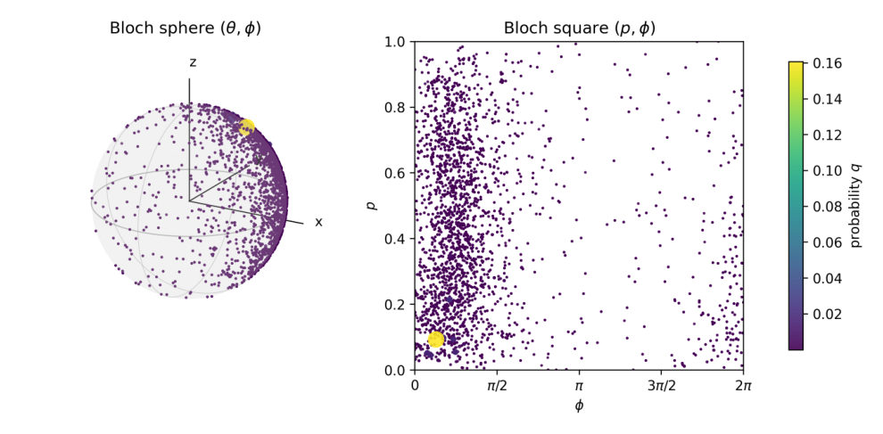
<figcaption class="paper-figure-caption"><b>Fig 1.</b> Figure 1: An example of a geometric quantum state for a qubit, D = 2. Each point is one element Γα of the ensemble, carrying a probability mass xα (color scale). Left: A representation of the ensemble on the Bloch sphere. Right: the same ensemble in canonically conjugated probability-phase coordinates, in which the state of the qubit is parameterized as |ψ⟩= √1 −p |0⟩+ √p eiϕ |1⟩and the state space becomes the “Bloch square” [0, 1] × [0, 2π), with the poles p = 0, 1 mapping to its lower and upper edges.</figcaption>
</figure>
<figure class="paper-figure-card">
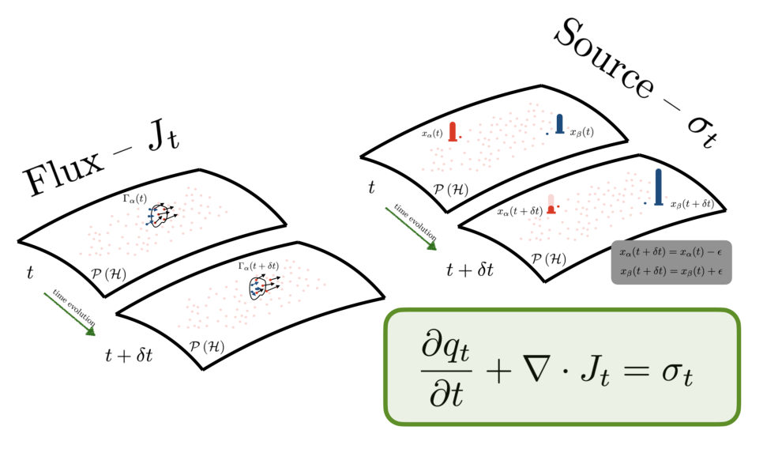
<figcaption class="paper-figure-caption"><b>Fig 2.</b> Figure 2: A diagrammatic view of the continuity equtaion. Left: Kinetic interpretation of the probability flux Jt. If we look at a small region of the quantum state space, due to the underlying dynamics we see that probability is locally conserved in the sense that there is a certain number of points which enters and leaves this region. As a result of this local process, probability is moved around and can concentrate in a certain region or get scrambled across the quantum state space. Right: Kinetic interpretation of the sink/source term σt. Even if the points do not move around the quantum state space ˙Γα = 0, the term σt allows the exchange of probability between different regions. Note...</figcaption>
</figure>
<figure class="paper-figure-card">
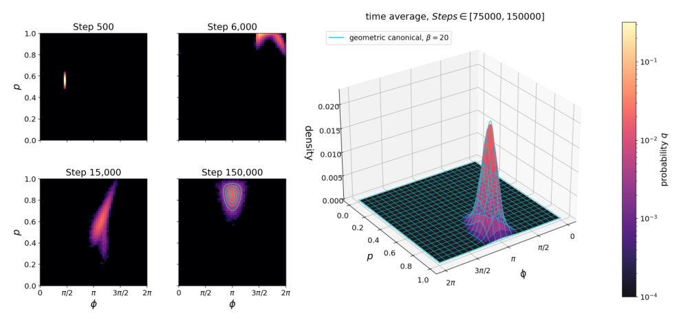
<figcaption class="paper-figure-caption"><b>Fig 3.</b> Figure 3: Left: Relaxation of a single stochastic trajectory of the qubit–Caldeira–Leggett Langevin equations, Eq. (13), toward the geometric canonical ensemble. Each panel shows the time-averaged histogram of (p, ϕ) accumulated over the trajectory up to the indicated step, exploiting the ergodicity of the process to approximate the ensemble qt from a single realization of the noise rather than an average over many. Starting from a narrow initial distribution, the trajectory is driven by the Hamiltonian drift toward the pole p = 1 before the dissipative and diffusive terms relax it onto a stationary profile. Right: Time-averaged ensemble from step 75,000 to step 150,000. By step 150,000,...</figcaption>
</figure>
<figure class="paper-figure-card">
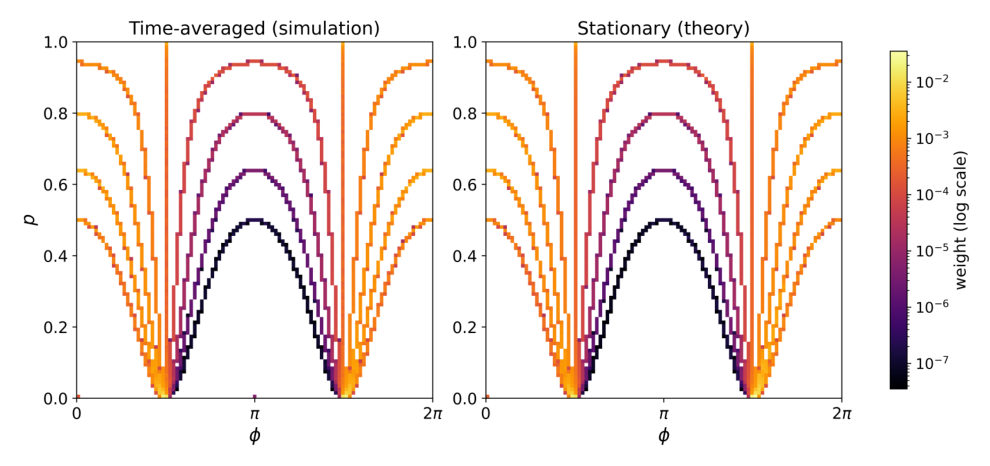
<figcaption class="paper-figure-caption"><b>Fig 4.</b> Figure 4: Time-averaged projected ensemble obtained by exact diagonalization of Eq. (18) (left), compared with the analytic stationary state of Eq. (22) (right), over the (p, ϕ) plane. The central spin is initialized in |0⟩and the bath is prepared at mean magnetization m0 = 0.5. Weights are shown on a logarithmic color scale. The two distributions agree to ∆MSE = 1.94 × 10−9, at the level of the sampling noise, confirming the prediction.</figcaption>
</figure>
</div>

<p><strong>Summary.</strong> This paper establishes an exact theoretical framework for describing the dynamics of projected ensembles, which characterize how a system's state evolves after interacting with an environment. The core result is a continuity equation governing probability flow across the quantum state space. This allows researchers to analyze complex non-equilibrium steady states in systems ranging from qubits to many-body models.</p>
<p><strong>Why it may be interesting.</strong> This work provides a powerful, general mathematical machinery—the continuity equation approach—to study non-equilibrium steady states in open quantum systems, which is crucial for understanding thermalization and quantum measurement processes beyond simple Markovian master equations.</p>
<details>
<summary>Detailed structure</summary>
<p><strong>Main problem.</strong> To develop a general and exact theory for the dynamics of projected ensembles, which are collections of conditional pure states induced by measuring an entangled environment.</p>
<p><strong>Main result.</strong> The theory yields an exact continuity equation on quantum state space ($\dot{\mu}_t + 
abla \cdot J_t = \sigma_t$), providing a framework to characterize both equilibrium and non-equilibrium stationary projected ensembles.</p>
<p><strong>Method.</strong> The dynamics are formulated as a problem of probability transport on the manifold of pure states, utilizing the symplectic structure of quantum state space and employing the method of characteristics for analysis.</p>
<p><strong>Model / system.</strong> The theory applies to open quantum systems undergoing system-environment interaction. Specific examples include analyzing projected ensembles in spin-star models or deriving Fokker-Planck equations for qubits on $   ext{CP}^1$.</p>
<p><strong>Key observables.</strong> Projected ensemble ($\mu$ or $q(z)$), probability flux ($J_t$), and source/sink terms ($\sigma_t$).</p>
<p><strong>Important parameters / regimes.</strong> The system-environment coupling strength, temperature (implicitly via equilibrium analysis), and the dimensionality of the Hilbert space.</p>
<p><strong>Assumptions / limitations.</strong> The theory is general and exact, relying on exploiting the symplectic structure of $ ext{P}(H)$. Specific derivations assume bipartite decomposition or specific noise/drift structures for simplified models.</p>
<p><strong>Figures summary.</strong> Figure 1 illustrates a geometric quantum state representation on the Bloch sphere. Figure 4 compares numerically calculated time-averaged projected ensembles against analytically derived stationary states for the spin-star model, showing excellent agreement.</p>
<p><strong>Paper structure.</strong> The paper develops the theory by first establishing the general continuity equation ($\dot{\mu}_t + 
abla \cdot J_t = \sigma_t$), then detailing how this governs probability transport via flux ($J_t$) and source/sink terms ($\sigma_t$). It applies this framework to specific models, such as the spin-star model or qubit dynamics on $  ext{CP}^1$, to derive concrete stationary state solutions.</p>
</details>
<details>
<summary>Abstract</summary>
<p>Projected ensembles---the collections of conditional pure states induced on a system by measuring an entangled environment---have become central objects in quantum science, underlying deep thermalization, quantum state designs, the emergence of classicality, and exhibiting interesting phase transitions. Here we develop a general and exact theory of their dynamics, yielding a systematic approach to their dynamics and equilibrium and non-equilibrium stationary states. We derive an exact continuity equation on quantum state space for the projected ensemble, together with microscopic kinetic equations and analytical expressions for the probability flux and source terms generated by the system-environment interaction. The resulting dynamics admits a classical representation: isolated systems obey Hamiltonian transport and Liouville's theorem, while open systems are described by a kinetic theory of probability transport. The stationary continuity equation provides a general characterization of equilibrium and non-equilibrium stationary projected ensembles, which can be analyzed through the method of characteristics. The theory provides an analytical framework for studying the emergence, structure, and timescales of equilibrium and non-equilibrium stationary projected ensembles, with applications ranging from deep thermalization and the emergence of classicality to random quantum-state generation and quantum device benchmarking.</p>
</details>
<p><sub><a href="#top">↑ back to top</a></sub></p>

<p><a id="paper-2608.10308"></a></p>
<h3 id="programmable-heisenberg-limit-sensor-from-a-nonlinear-quantum-energy-pump"><a href="http://arxiv.org/abs/2608.10308v1">Programmable Heisenberg-limit sensor from a nonlinear quantum energy pump</a></h3>
<p><strong>Authors:</strong> Yang Peng<br>
<strong>Type:</strong> theory · <strong>Category:</strong> other · <strong>PDF:</strong> <a href="https://arxiv.org/pdf/2608.10308v1">https://arxiv.org/pdf/2608.10308v1</a><br>
<strong>Analysis basis:</strong> full PDF text, analyzed in chunks
<strong>Topic relevance:</strong> <code>Tavis-Cummings &amp; cavity-many-emitter</code> <strong>3/5</strong> · <code>quantum optics experiment</code> <strong>3/5</strong> · <code>QC/QI experiment</code> <strong>2/5</strong> · <code>driven-dissipative phase transition</code> <strong>2/5</strong> · <code>analog quantum simulation</code> <strong>1/5</strong> · <code>correlated / nonlocal dissipation</code> <strong>1/5</strong> · <code>methods for driven-dissipative</code> <strong>1/5</strong> · <code>quantum measurements</code> <strong>1/5</strong></p>
<div class="figure-strip-hint">↔ Scroll figures horizontally</div>
<div class="paper-figures-scroll">
<figure class="paper-figure-card">
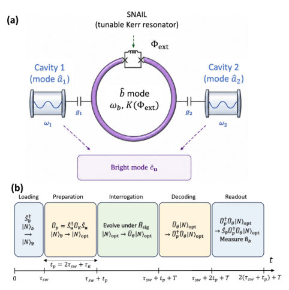
<figcaption class="paper-figure-caption"><b>Fig 1.</b> FIG. 1. Programmable sensing architecture with circuit-QED implementation. (a) A flux-tunable SNAIL resonator provides the nonlinear pump mode ˆb and is parametrically coupled to two terminal cavities ˆa1 and ˆa2. The relative coupling amplitudes and phases select the collective bright mode ˆcu that couples to the pump, while the external flux controls the pump Kerr interaction. (b) Pulse sequence for initial state loading, preparation, sensing, decoding, and readout. A complete swap ˆS† ˜v loads the initial pump Fock state |N⟩b into the terminal mode |N⟩˜v. The nonlinear preparation ˆUp = ˆS† u ˆUK ˆSu generates the optimal probe |N⟩opt, which evolves under the sensing Hamiltonian for time...</figcaption>
</figure>
<figure class="paper-figure-card">
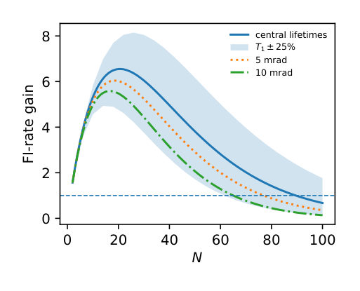
<figcaption class="paper-figure-caption"><b>Fig 2.</b> FIG. 2. Realistic two-terminal benchmark for the dif- ferential signal ˆHsig = λ(ˆn1 −ˆn2)/2 using the complete loading–preparation–interrogation–decoding–unloading proto- col. Shown is the FI-rate gain R relative to a lossy separable sensor with zero control overhead. For G/2π = 2.05 MHz, |K|/2π = 5.21 MHz, T1,T = 204 µs, T1,P = 16 µs, and T = 5 µs, the gain peaks at R ≃6.55 near N = 21. The shaded band varies both lifetimes by ±25%; dotted and dash- dotted curves include quasistatic differential-phase noise of 5 and 10 mrad rms, respectively. The blue dashed line indicates R = 1.</figcaption>
</figure>
<figure class="paper-figure-card">
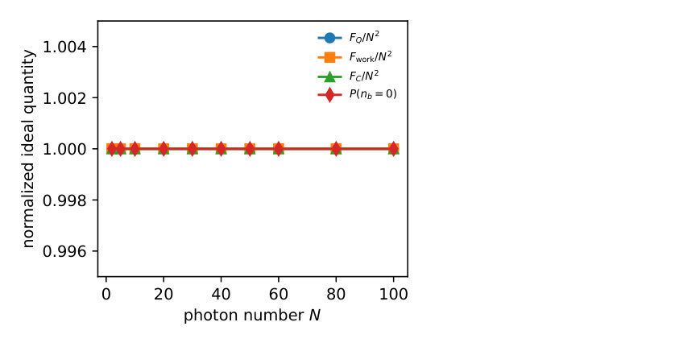
<figcaption class="paper-figure-caption"><b>Fig 3.</b> FIG. 3. Ideal resource accounting for the current protocol: normalized terminal QFI, QFI reconstructed from terminal-number correlations, binary return FI, and pump-vacuum probability after preparation.</figcaption>
</figure>
<figure class="paper-figure-card">
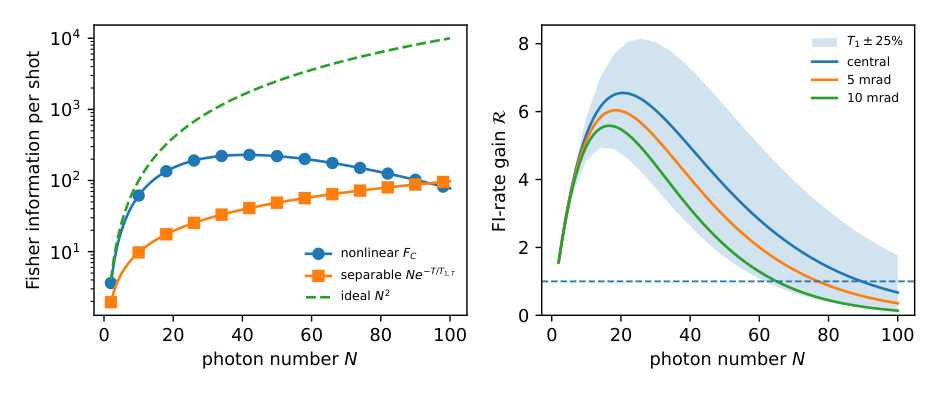
<figcaption class="paper-figure-caption"><b>Fig 4.</b> FIG. 4. Detailed two-terminal benchmark for the current protocol. Left: binary Fisher information per shot with the central lifetimes, together with the favorable lossy separable reference and ideal N 2 scaling. Right: Fisher-information-rate gain. The shaded band varies both lifetimes by ±25%; the additional curves include 5 and 10 mrad rms quasistatic differential-phase noise. The known analysis bias is recalibrated for each N.</figcaption>
</figure>
<figure class="paper-figure-card">
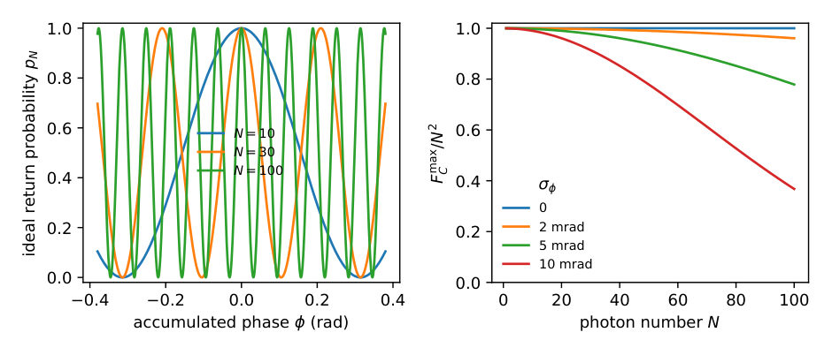
<figcaption class="paper-figure-caption"><b>Fig 5.</b> FIG. 5. Local phase range and quasistatic differential-phase noise. Left: ideal return fringes for representative photon numbers. Right: maximum binary Fisher information after Gaussian phase averaging, normalized by N2.</figcaption>
</figure>
</div>

<p><strong>Summary.</strong> The paper presents a theoretical framework for building highly sensitive bosonic quantum sensors capable of achieving Heisenberg-limited precision. It details a protocol utilizing a Kerr-nonlinear resonator coupled to microwave cavities to programmatically generate optimal probe states. The key contribution is showing how to achieve this maximal sensitivity while also providing methods to calibrate the metrological resource using only local energy measurements.</p>
<p><strong>Why it may be interesting.</strong> This work directly tackles quantum metrology limits using superconducting circuit-QED platforms, providing concrete, programmable protocols that push beyond standard scaling laws by engineering nonlinear interactions into the sensing mechanism.</p>
<details>
<summary>Detailed structure</summary>
<p><strong>Main problem.</strong> The goal is to design a general, programmable quantum sensing protocol that achieves Heisenberg-limit scaling for parameter estimation in bosonic systems.</p>
<p><strong>Main result.</strong> The authors provide a constructive method to map an arbitrary number-conserving sensing Hamiltonian onto experimental controls (pump couplings and pulse sequences) to realize this optimal sensor.</p>
<p><strong>Method.</strong> The analysis involves constructing the optimal probe state via specific unitary operations (swap and Kerr pulses) and calculating the Quantum Fisher Information (QFI) based on the system's evolution under the signal Hamiltonian.</p>
<p><strong>Model / system.</strong> The physical platform is a programmable bosonic sensor implemented using a Kerr-nonlinear resonator coupled to multiple high-Q microwave terminal resonators in a circuit-QED setup. The dynamics are governed by a complex time-dependent Hamiltonian including nonlinear, coupling, and signal terms.</p>
<p><strong>Key observables.</strong> Quantum Fisher Information (QFI), FI-rate gain ($R$), local energy correlations ($ ext{Cov}(W_i, W_j)$), and the optimal accumulated phase ($\phi$).</p>
<p><strong>Important parameters / regimes.</strong> Photon number ($N$), interrogation time ($T$), Kerr nonlinearity strength ($K$), and noise parameters like quasistatic phase noise ($\sigma_\phi$).</p>
<p><strong>Assumptions / limitations.</strong> The analysis often assumes ideal, lossless conditions for establishing the theoretical limit, though it also incorporates realistic imperfections like photon loss.</p>
<p><strong>Figures summary.</strong> Figures illustrate the programmable architecture (Fig. 1), compare normalized QFI and Fisher information to unity in the ideal case (Fig. 3), detail the two-terminal benchmark showing rate gain vs. noise (Fig. 4), and quantify metrological infidelity under various coherent control errors (Figs. 7 &amp; 8).</p>
<p><strong>Paper structure.</strong> The paper systematically develops the sensing protocol: first, defining the programmable architecture; second, deriving optimal probe preparation sequences; third, calculating the QFI for ideal signals; and finally, analyzing performance degradation due to realistic noise sources like loss and phase fluctuations.</p>
</details>
<details>
<summary>Abstract</summary>
<p>We introduce a programmable Heisenberg-limited bosonic quantum sensor based on a nonlinear quantum energy pump, implemented with a Kerr-nonlinear resonator coupled to multiple high-Q microwave terminal resonators. For parameter estimation encoded in an arbitrary number-conserving Hamiltonian acting on the terminal modes, we analytically construct optimal sensing protocols that attain the maximal quantum Fisher information, including initial-state loading, probe preparation, and readout. For diagonal multiparameter signals, we further show that the full phase-sensing quantum Fisher information matrix can be obtained from correlations of locally measured physical terminal works, providing a signal-free calibration of the metrological resource. We numerically demonstrate the construction and its robustness using realistic circuit-QED parameters while including experimentally relevant imperfections.</p>
</details>
<p><sub><a href="#top">↑ back to top</a></sub></p>

<p><a id="paper-2608.10942"></a></p>
<h3 id="enhanced-two-photon-blockade-without-cascade-channel-by-stark-nonlinear-coupling"><a href="http://arxiv.org/abs/2608.10942v1">Enhanced two-photon blockade without cascade channel by Stark nonlinear coupling</a></h3>
<p><strong>Authors:</strong> Zu-Jian Ying, Hang-Hang Han<br>
<strong>Type:</strong> theory · <strong>Category:</strong> other · <strong>PDF:</strong> <a href="https://arxiv.org/pdf/2608.10942v1">https://arxiv.org/pdf/2608.10942v1</a><br>
<strong>Analysis basis:</strong> full PDF text, analyzed in chunks
<strong>Topic relevance:</strong> <code>analog quantum simulation</code> <strong>3/5</strong> · <code>methods for driven-dissipative</code> <strong>3/5</strong> · <code>Tavis-Cummings &amp; cavity-many-emitter</code> <strong>2/5</strong> · <code>driven-dissipative phase transition</code> <strong>2/5</strong> · <code>Keldysh / 2PI / non-Gaussian methods</code> <strong>1/5</strong> · <code>correlated / nonlocal dissipation</code> <strong>1/5</strong> · <code>quantum measurements</code> <strong>1/5</strong></p>
<div class="figure-strip-hint">↔ Scroll figures horizontally</div>
<div class="paper-figures-scroll">
<figure class="paper-figure-card">
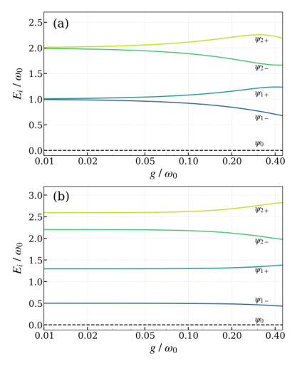
<figcaption class="paper-figure-caption"><b>Fig 1.</b> FIG. 1. Potential of manipulation via the Stark coupling: Low energy levels Ei of H0, relevant for TPB, versus linear coupling strength g in the absence (a) and presence (b) of the Stark nonlinear coupling χ. Here, the energy of the ground state |ψ0⟩is set as the energy reference, ω0 = (ω + Ω)/2 is set to be the energy unit and θ = 0.3π. ω = 1.0ω0 and χ = 0 in (a); ω = 1.5ω0 and χ = 0.136 in (b).</figcaption>
</figure>
<figure class="paper-figure-card">
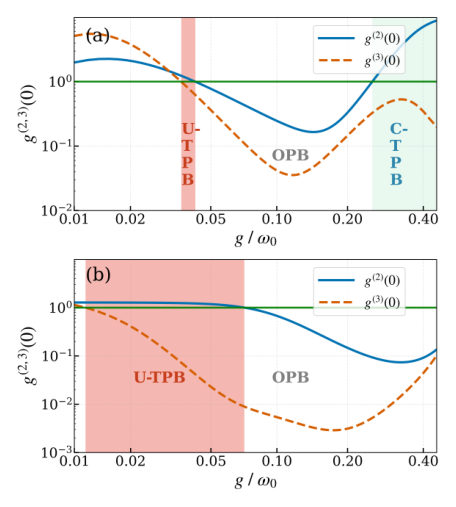
<figcaption class="paper-figure-caption"><b>Fig 2.</b> FIG. 2. Enhanced unconventional two-photon blockade (U- TPB) without primary cascade channel by the Stark coupling χ in strong linear coupling regime (0.01 ≲g/ω0 ≲0.1), apart from the conventional TPB (C-TPB) with primary cascade channel in ultrastrong-coupling (USC, g/ω0 ≳0.1) regime. TPB is identified by g(2)(0) &gt; 1 and g(3)(0) &lt; 1 under coher- ent driving from the ground state |ψ0⟩onto the |ψ1+⟩state, where g(2)(0) (solid) and g(3)(0) (dashed) are the second- and third-order equal-time correlation functions. (a) g(2)(0) and g(3)(0) versus g at χ = 0.0. (b) g(2)(0) and g(3)(0) ver- sus g at χ = 0.136. In (a) and (b), the pale-rose (gray) shaded region marks the U-TPB window, while C-TPB...</figcaption>
</figure>
<figure class="paper-figure-card">
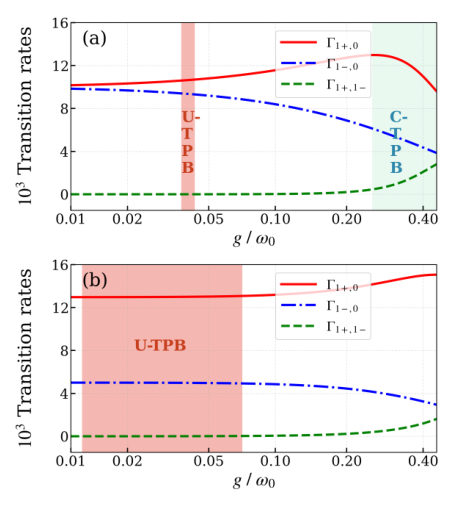
<figcaption class="paper-figure-caption"><b>Fig 3.</b> FIG. 3. Transition rates of different decay channels versus g/ω0: Γ1+,0 (solid red), Γ1−,0 (dash-dotted blue), and Γ1+,1− (dashed green): (a) χ = 0.0, (b) χ = 0.136. The primary cas- cade channel Γ1+,1−remains negligible in the U-TPB regime, while it becomes large in the C-TPB regime.</figcaption>
</figure>
<figure class="paper-figure-card">
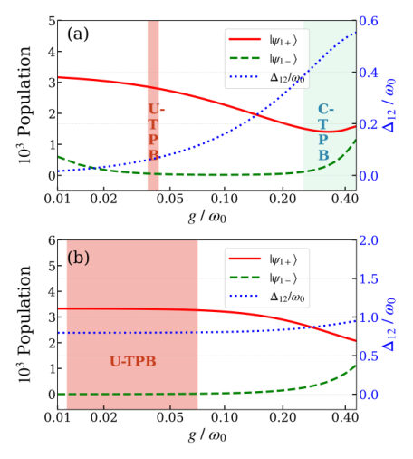
<figcaption class="paper-figure-caption"><b>Fig 4.</b> FIG. 4. Populations (left axis) of states |ψ1+⟩(solid line) and |ψ1−⟩(dashed line) in cascade decay and the gap ∆12 (dotted line, right axis) between these two state: (a) χ = 0.0, (b) χ = 0.136. The |ψ1−⟩population is vanishing in the U-TPB while it is finite in the C-TPB.</figcaption>
</figure>
<figure class="paper-figure-card">
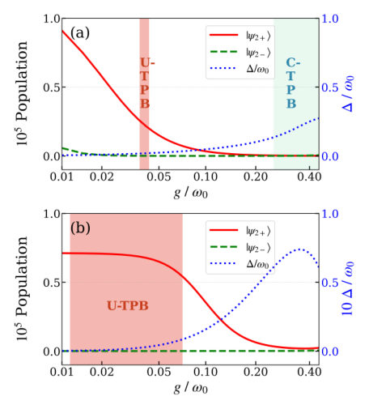
<figcaption class="paper-figure-caption"><b>Fig 5.</b> FIG. 5. Weak anharmonicity (dotted line, right axis) and populations (lrft axis) of states |ψ2+⟩(solid line) and |ψ2−⟩ (dashed line) above decay cascade: (a) χ = 0.0, (b) χ = 0.136. The |ψ2+⟩population is non-vanishing due to resonance effect in weak anharmonicity, which enables the formation of the U- TPB without the conventional cascade decay channel of the C-TPB in Fig. 4.</figcaption>
</figure>
</div>

<p><strong>Summary.</strong> The paper proposes using Stark nonlinear coupling to significantly improve the Unconventional Two-Photon Blockade (U-TPB) in quantum light-matter systems. By tuning system parameters, this method not only expands the operational regime of U-TPB but also deepens its blockade effect substantially. This offers a practical pathway for controlling photon correlations beyond standard theoretical limits.</p>
<p><strong>Why it may be interesting.</strong> This work directly addresses advanced topics in quantum optics and open quantum systems, providing a concrete mechanism (Stark coupling) to engineer and enhance non-classical light correlations like two-photon blockade in solid-state or cavity platforms.</p>
<details>
<summary>Detailed structure</summary>
<p><strong>Main problem.</strong> The primary goal is to enhance the Unconventional Two-Photon Blockade (U-TPB) in light-matter coupling systems without relying on an open cascade decay channel.</p>
<p><strong>Main result.</strong> Introducing Stark nonlinear coupling dramatically broadens the U-TPB operating window across the entire strong-coupling regime and deepens the blockade degree by two orders of magnitude.</p>
<p><strong>Method.</strong> The analysis uses theoretical modeling involving generalized quantum Rabi Hamiltonians, perturbation theory to calculate energy corrections, and solving the system dynamics via a Lindblad master equation.</p>
<p><strong>Model / system.</strong> The system is a light-matter coupling setup (e.g., cavity QED) modeled by a Hamiltonian incorporating both standard coupling terms and a Stark nonlinear coupling term ($\chi$).</p>
<p><strong>Key observables.</strong> Photon correlation functions ($g^{(2)}(0)$, $g^{(3)}(0)$), blockade degree, cascade decay rates ($\Gamma_{1+,1-}$), and state populations.</p>
<p><strong>Important parameters / regimes.</strong> Stark coupling strength ($\chi$), cavity/qubit coupling strength ($g$), detuning, and the anharmonicity ($\Delta$).</p>
<p><strong>Assumptions / limitations.</strong> The analysis relies on perturbation theory beyond the Jaynes-Cummings regime and assumes that the Stark coupling is realizable and tailorable.</p>
<p><strong>Figures summary.</strong> Figures illustrate how the Stark coupling tunes energy levels and anharmonicity, showing phase diagrams mapping out U-TPB and C-TPB regions across different coupling regimes.</p>
<p><strong>Paper structure.</strong> The paper progresses by first defining the system Hamiltonian including the Stark term, then using perturbation theory to analyze energy corrections, followed by analyzing dynamics via the master equation to characterize blockade signatures in correlation functions and phase diagrams.</p>
</details>
<details>
<summary>Abstract</summary>
<p>Two-photon blockade (TPB) besides the conventional one-photon blockade can control the photon at the level of individual quanta in the input-output measurements of light-matter coupling systems. Apart from conventional TPB (C-TPB) with opened cascade decay channel, unconventional TPB (U-TPB) with closed cascade decay channel may open novel avenues for manipulation of TPB. However, currently found U-TPB in linear coupling is limited in a narrow coupling window and the blockade strength is weak, which would hinder its applications. In the present work we propose to enhance the U-TPB by the Stark nonlinear coupling. Indeed, the introduction of the Stark nonlinear coupling to the linear coupling enables tuning of both cascade energy level and the anharmonicity which play key roles in the formation of TPBs. By investigating photon correlation functions and extracting phase diagrams in dissipation, we demonstrate that our scheme not only dramatically broadens the window of U-TPB to cover the entire strong-coupling regime but also deepens the blockading degree of the U-TPB by two orders. The cascade decay rates, state populations and the anharmonicity, are examined to identify and track the U-TPB and C-TPB. In the overview of phase diagrams we also reveal a broad U-TPB in ultrastrong couplings, with a crossover to the C-TPB. Since the Stark nonlinear coupling is realizable and tailorable, our proposal may pave a practical way for manipulation of the TPB.</p>
</details>
<p><sub><a href="#top">↑ back to top</a></sub></p>

<p><a id="paper-2608.10081"></a></p>
<h3 id="kinetics-of-sliding-window-quantum-error-correction"><a href="http://arxiv.org/abs/2608.10081v1">Kinetics of sliding-window quantum error correction</a></h3>
<p><strong>Authors:</strong> Adithya Sriram, Charles Stahl, Aleksander Kubica, Yaodong Li<br>
<strong>Type:</strong> theory · <strong>Category:</strong> quantum information and computing · <strong>PDF:</strong> <a href="https://arxiv.org/pdf/2608.10081v1">https://arxiv.org/pdf/2608.10081v1</a><br>
<strong>Analysis basis:</strong> full PDF text, analyzed in chunks
<strong>Topic relevance:</strong> <code>methods for driven-dissipative</code> <strong>3/5</strong> · <code>non-equilibrium universality</code> <strong>3/5</strong> · <code>quantum measurements</code> <strong>3/5</strong> · <code>driven-dissipative phase transition</code> <strong>2/5</strong> · <code>correlated / nonlocal dissipation</code> <strong>1/5</strong> · <code>scars &amp; prethermalization</code> <strong>1/5</strong></p>
<div class="figure-strip-hint">↔ Scroll figures horizontally</div>
<div class="paper-figures-scroll">
<figure class="paper-figure-card">
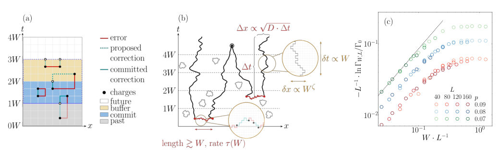
<figcaption class="paper-figure-caption"><b>Fig 1.</b> FIG. 1. (a) Illustration of the sliding-window decoder, for the first few rounds. The error and the correction together form closed loops in the bulk, with possible termination on the temporal boundary between the “buffer” and the “future” regions. Within each round, only correction operations in the “commit” region are turned into physical corrections; those in the “buffer” region serve as a look-ahead to improve decoding accuracy. (b) Worldlines of Z2 charges. Fast pair nucleation and annihilation events occur within O(W) time scale (gray), whereas slow processes persist over many decoding rounds (black), and contribute to decoding failure. Nucleation events for slow charges are...</figcaption>
</figure>
<figure class="paper-figure-card">
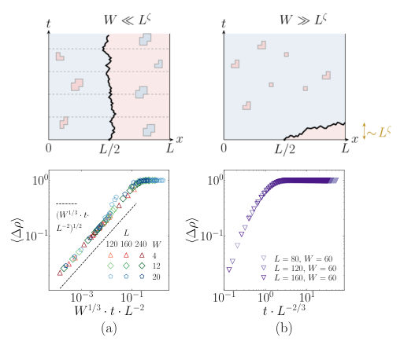
<figcaption class="paper-figure-caption"><b>Fig 2.</b> FIG. 2. Diffusive motion of Z2 charges. (a) For W ≪Lζ, we predict that ⟨|∆ρ|⟩∝(D · t · L−2)1/2, where D ∝W 1/3 is the effective diffusion constant, see Eq. (3). (b) For W ≫Lζ, the domain wall tends to take a shortest path to terminate either on the left or right boundary. Thus, ⟨∆ρ⟩saturates at time t ∝Lζ, where Lζ is the height of the domain wall. At earlier times, ⟨∆ρ⟩depends on t through the scaling variable t · L−ζ.</figcaption>
</figure>
<figure class="paper-figure-card">
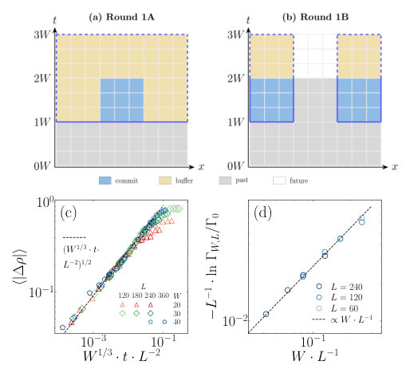
<figcaption class="paper-figure-caption"><b>Fig 3.</b> FIG. 3. (a, b) Layout of modular SWD. (c) Results for dif- fusive motion under modular SWD, compare with Fig. 2(a). (d) Results for the crossover scaling of the memory time un- der modular SWD, compare Fig. 1(c).</figcaption>
</figure>
<figure class="paper-figure-card">
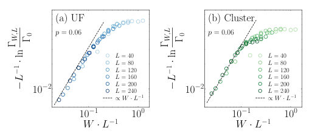
<figcaption class="paper-figure-caption"><b>Fig 4.</b> FIG. 4. Results from Pfail of SWD with the UF and clustering decoders. The data is in agreement with Eq. (5) and Fig. 1(c).</figcaption>
</figure>
<figure class="paper-figure-card">
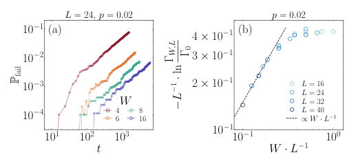
<figcaption class="paper-figure-caption"><b>Fig 5.</b> FIG. 5. Crossover scaling of the 2D toric code (compare with Fig. 1 for the 1D repetition code). For early times, we did not observe any logical failures in 104 realizations.</figcaption>
</figure>
</div>

<p><strong>Summary.</strong> This paper develops an effective kinetic theory to describe how quantum error correction performs in real time using sliding windows. It models the syndrome information evolution as a parity-conserving reaction-diffusion process for $\mathbb{Z}_2$ charges. The key finding is that this system exhibits universal crossover scaling between different operational regimes, providing crucial insights into hardware limitations.</p>
<p><strong>Why it may be interesting.</strong> This work provides a powerful connection between non-equilibrium statistical mechanics (reaction-diffusion kinetics) and the practical performance limits of quantum computation hardware, offering quantitative predictions for error thresholds based on temporal processing constraints.</p>
<details>
<summary>Detailed structure</summary>
<p><strong>Main problem.</strong> The study addresses the kinetics of Quantum Error Correction (QEC) in a real-time setting, moving beyond static theoretical models.</p>
<p><strong>Main result.</strong> Sliding-Window Decoding (SWD) can be effectively described by a stochastic kinetic process involving parity-conserving reaction and diffusion of $\mathbb{Z}_2$-charged point particles.</p>
<p><strong>Method.</strong> The authors derive an effective description by analyzing the dynamics over large length and time scales relative to the window size $W$, connecting microscopic SWD processes to macroscopic kinetic models.</p>
<p><strong>Model / system.</strong> The system is modeled using topological CSS codes (e.g., 1D repetition code, 2D toric code) undergoing syndrome measurement via a sliding temporal window ($W$). Errors manifest as $\mathbb{Z}_2$-charged point particles whose dynamics are tracked.</p>
<p><strong>Key observables.</strong> Memory Time ($t_{	ext{mem}}$), logical failure probability ($P_{	ext{fail}}(t; W, L)$), and the density of domain walls ($
ho_{DW}$).</p>
<p><strong>Important parameters / regimes.</strong> Window size $W$, system length $L$, error rate $p$, and the decoding rate $1/W$. The crossover between regimes defined by $W$ vs. $L$ is crucial.</p>
<p><strong>Assumptions / limitations.</strong> The effective description holds for scales much larger than the window size $W$; the analysis often assumes quasi-local motion of defects; and specific decoders (like MWPM) are used as the basis for comparison.</p>
<p><strong>Figures summary.</strong> Figures illustrate the SWD mechanism with temporal windows, worldlines of $\mathbb{Z}_2$ charges distinguishing fast/slow processes, and data collapse confirming universal crossover scaling laws between different physical regimes.</p>
<p><strong>Paper structure.</strong> The paper establishes the need for real-time QEC kinetics, models SWD as a reaction-diffusion process, derives scaling relations for memory time and diffusion constant across various length scales ($W$ vs $L$), and validates this effective theory using multiple code types (1D, 2D) and noise models.</p>
</details>
<details>
<summary>Abstract</summary>
<p>Practical implementations of quantum error correction (QEC) require rapid measurement and continuous processing of the syndrome information in order to prevent a backlog of unprocessed data. While <code>static'' QEC is theoretically well understood via mappings to equilibrium statistical mechanics models, such an understanding of</code>real-time'' QEC is currently lacking. Here, we study the kinetics of sliding window decoding (SWD), an implementation of real-time decoding that acts on temporally local windows of noisy syndrome information and commits to corrections irreversibly at a nonzero rate. We propose an effective description of SWD in terms of a stochastic kinetic process, where $\mathbb{Z}_2$-charged point particles undergo parity-conserving reaction and diffusion. This model describes dynamics at length and time scales large compared to the window size $W$, whereas physics at scales smaller than $W$ leads to nontrivial $W$-dependent scaling of the effective parameters. We identify the rate of decoding $1/W$ as a relevant perturbation to the decodable phase. We also show broad applicability of our results by changing many microscopic details of SWD without affecting the effective description.</p>
</details>
<p><sub><a href="#top">↑ back to top</a></sub></p>

<p><a id="paper-2608.11202"></a></p>
<h3 id="exact-first-passage-time-response-theory-from-steady-state-response"><a href="http://arxiv.org/abs/2608.11202v1">Exact First-Passage Time Response Theory from Steady-State Response</a></h3>
<p><strong>Authors:</strong> Ruicheng Bao, Shiling Liang<br>
<strong>Type:</strong> theory · <strong>Category:</strong> statistical mechanics · <strong>PDF:</strong> <a href="https://arxiv.org/pdf/2608.11202v1">https://arxiv.org/pdf/2608.11202v1</a><br>
<strong>Analysis basis:</strong> full PDF text, analyzed in chunks
<strong>Topic relevance:</strong> <code>methods for driven-dissipative</code> <strong>3/5</strong> · <code>driven-dissipative phase transition</code> <strong>2/5</strong> · <code>non-equilibrium universality</code> <strong>2/5</strong> · <code>quantum measurements</code> <strong>2/5</strong> · <code>analog quantum simulation</code> <strong>1/5</strong> · <code>correlated / nonlocal dissipation</code> <strong>1/5</strong> · <code>scars &amp; prethermalization</code> <strong>1/5</strong></p>
<div class="figure-strip-hint">↔ Scroll figures horizontally</div>
<div class="paper-figures-scroll">
<figure class="paper-figure-card">
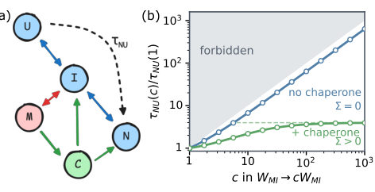
<figcaption class="paper-figure-caption"><b>Fig 1.</b> FIG. 1. (a) Trap-bottleneck geometry and the chaperone cy- cle acting downstream of the same perturbed edge I →M (rose): capture (M →C), productive release (C →N), and futile release (C →I), all in green. (b) Finite response of τNU to scaling the trap-entry rate WMI →cWMI, on doubly log- arithmic axes. The blue curve is the chaperone-free network, the green curve is the network with the chaperone, and the shaded region is forbidden by the universal harmful-side en- velope τ(c) ≤c τ(1). Solid lines are the exact prediction from Eq. (3b); markers are direct numerical computation. The trap is unscreened without the chaperone (ΣN|MI = 0) and screened with it (ΣN|MI &gt; 0), so the response...</figcaption>
</figure>
<figure class="paper-figure-card">
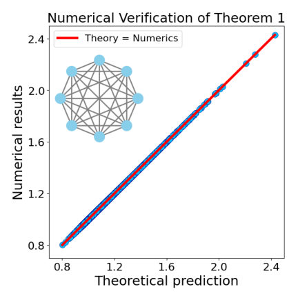
<figcaption class="paper-figure-caption"><b>Fig 2.</b> FIG. 1. Numerical verification of the exact finite single-rate update (Theorem 1). In each of the 105 iterations, an 8-state fully connected Markov chain is randomly generated with transition rates drawn uniformly from [0.01, 10]. One pair (k, l) is chosen for the MFPT, another pair (m, n) for the perturbation, and the perturbation strength is drawn uniformly from [0.01, 10]. The numerical MFPT ratio agrees with the exact prediction.</figcaption>
</figure>
<figure class="paper-figure-card">
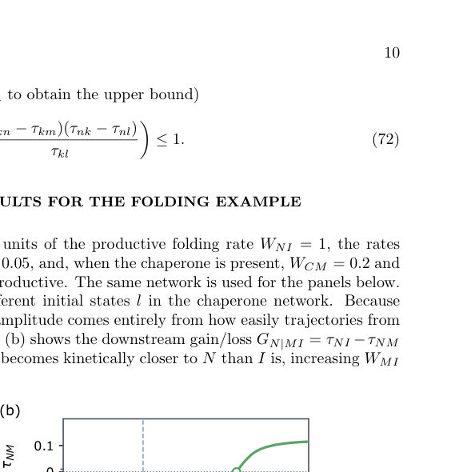
<figcaption class="paper-figure-caption"><b>Fig 3.</b> Fig. 1 value</figcaption>
</figure>
<figure class="paper-figure-card">
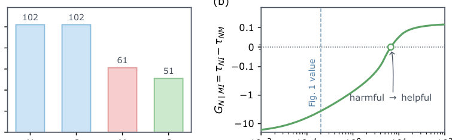
<figcaption class="paper-figure-caption"><b>Fig 4.</b> FIG. 2. Additional numerical panels for the folding example. Panel (a) gives the upstream accessibility in the chaperone network for different initial states. Panel (b) gives the downstream gain/loss as the chaperone capture rate WCM is varied ; it changes sign at WCM ≃6.7, well above the value used in Fig. 1 (dashed line).</figcaption>
</figure>
</div>

<p><strong>Summary.</strong> This work develops an exact theory detailing how Mean First-Passage Times change when a system's transition rates are perturbed. By mapping the transient response onto steady-state calculations, the authors provide universal formulas for predicting these changes. This framework is crucial for analyzing and controlling dynamic processes in complex physical, chemical, or biological networks.</p>
<p><strong>Why it may be interesting.</strong> While focused on classical Markov processes, the rigorous mathematical framework for analyzing time-dependent non-equilibrium dynamics (like MFPTs) is highly relevant to open quantum systems where relaxation times and transition rates are key observables.</p>
<details>
<summary>Detailed structure</summary>
<p><strong>Main problem.</strong> The paper aims to establish a systematic, exact theoretical framework for understanding how the Mean First-Passage Time (MFPT) responds to external perturbations in continuous-time Markov processes.</p>
<p><strong>Main result.</strong> It derives universal response relations for MFPTs—including linear and nonlinear terms—expressed entirely using unperturbed MFPTs and steady-state probabilities, providing computational advantages for prediction and control.</p>
<p><strong>Method.</strong> The core method involves establishing an exact correspondence that maps the transient MFPT response onto the steady-state response of a carefully constructed auxiliary system.</p>
<p><strong>Model / system.</strong> The analysis is based on continuous-time Markov processes governed by the master equation, applied to systems like folding networks and general kinetic state transitions.</p>
<p><strong>Key observables.</strong> Mean First-Passage Time (MFPT, $   au_{kl}$), steady-state probabilities ($\pi_k$), and their derivatives/responses to rate perturbations.</p>
<p><strong>Important parameters / regimes.</strong> Perturbation strength ($\Delta W_{mn}$), unperturbed MFPTs, and steady-state probabilities.</p>
<p><strong>Assumptions / limitations.</strong> The theory is developed for single-rate perturbations ($W_{mn} 	o W_{mn} + \Delta W_{mn}$) in the Markov process rates.</p>
<p><strong>Figures summary.</strong> Figures illustrate the geometry of trap-bottleneck dynamics (Application I) and show numerical verification of finite response saturation due to screening factors ($\Sigma$).</p>
<p><strong>Paper structure.</strong> The paper builds from establishing the fundamental correspondence between transient MFPT response and steady-state response, deriving exact linear/nonlinear update formulas, decomposing the nonlinear response into upstream accessibility, downstream gain/loss, and screening terms, and finally applying these tools to physical models like folding networks.</p>
</details>
<details>
<summary>Abstract</summary>
<p>The mean first-passage time (MFPT) provides a universal temporal measure of transport, reaction, search, and switching processes in physical, chemical, and biological systems. Understanding how MFPTs respond to perturbations is therefore crucial for prediction and control, yet a systematic theory has been lacking. We establish a compact theoretical framework for linear and nonlinear MFPT response in continuous-time Markov processes. The key tool is an exact correspondence that maps the intrinsically transient response of MFPTs onto the steady-state response of an auxiliary system. This correspondence yields exact and universal response relations for MFPTs between arbitrary state pairs, expressed entirely in terms of unperturbed MFPTs and steady-state probabilities. We then obtain a factorized physical decomposition of the MFPT response into linear upstream, linear downstream, and nonlinear contributions. Further corollaries include response-curve inference rules, fundamental bounds on MFPT responses, analytical expressions for higher-order responses of MFPTs and steady-state probabilities, and multi-rate response formulas. Additionally, our result offers computational advantages in calculating both MFPTs and steady-state distributions. Finally, a biologically motivated folding network is analyzed, and a recently reported paradox on MFPT is clarified.</p>
</details>
<p><sub><a href="#top">↑ back to top</a></sub></p>

<p><a id="paper-2608.10856"></a></p>
<h3 id="future-perspective-of-muons-a-quantum-particle-measuring-quantum-processes"><a href="http://arxiv.org/abs/2608.10856v1">Future perspective of muons; a quantum particle measuring quantum processes</a></h3>
<p><strong>Authors:</strong> Adam Berlie, Sayani Biswas, Alex Louat, Rhea Stewart, John Wilkinson<br>
<strong>Type:</strong> theory · <strong>Category:</strong> other · <strong>PDF:</strong> <a href="https://arxiv.org/pdf/2608.10856v1">https://arxiv.org/pdf/2608.10856v1</a><br>
<strong>Analysis basis:</strong> full PDF text, analyzed in chunks
<strong>Topic relevance:</strong> <code>quantum measurements</code> <strong>3/5</strong> · <code>Keldysh / 2PI / non-Gaussian methods</code> <strong>2/5</strong> · <code>analog quantum simulation</code> <strong>2/5</strong> · <code>driven-dissipative phase transition</code> <strong>2/5</strong> · <code>correlated / nonlocal dissipation</code> <strong>1/5</strong> · <code>methods for driven-dissipative</code> <strong>1/5</strong> · <code>non-equilibrium universality</code> <strong>1/5</strong></p>
<div class="figure-strip-hint">↔ Scroll figures horizontally</div>
<div class="paper-figures-scroll">
<figure class="paper-figure-card">
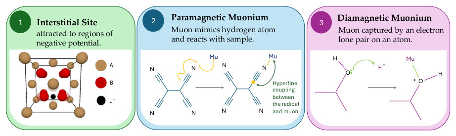
<figcaption class="paper-figure-caption"><b>Fig 1.</b> Figure 1: A schematic diagram showing the different muon states that can form in materials 1) a bare muon at an interstitial site; 2) diamagnetic muonium; and 3) paramagnetic muo- nium.</figcaption>
</figure>
<figure class="paper-figure-card">
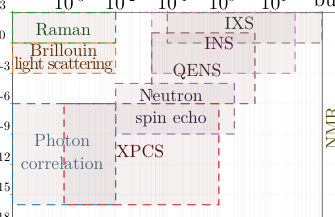
<figcaption class="paper-figure-caption"><b>Fig 2.</b> Figure 2: Comparison of the dynamical ranges accessed by selected spectroscopic and scat- tering techniques.(a) Approximate characteristic energy scales , E = ¯hω, and, for scattering techniques, momentum transfer ranges. Local and bulk probes are shown on the right using an equivalent energy scale derived from their characteristic frequencies. (b) Approximate fre- quency and corresponding time-scale windows accessible to remanence measurements, AC susceptibility, nuclear magnetic resonance (NMR), muon spin rotation/relaxation (µSR), M¨ossbauer spectroscopy, electron spin resonance (ESR), and neutron spectroscopyThe dis- played ranges are schematic and depend on the instrument, applied...</figcaption>
</figure>
<figure class="paper-figure-card">
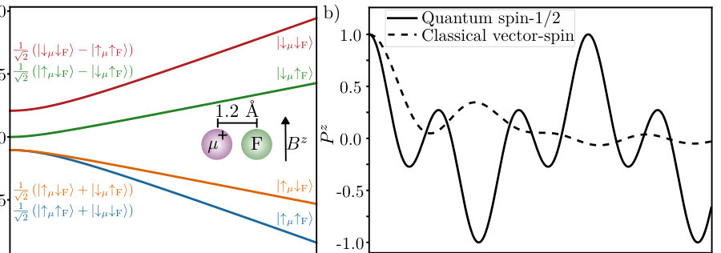
<figcaption class="paper-figure-caption"><b>Fig 3.</b> Figure 3: a) Energy levels of the F–µ pair as a function of the magnetic field Bz, with the F–µ bond oriented along the x-axis. Only the dipolar coupling and an external magnetic field applied along the z-axis are included. The inset shows the geometry considered. b) Zero-field (ZF) muon polarisation function for unpolarised initial fluorine spins, calculated using quantum spin-1/2 dipolar dynamics and classical vector-spin dipolar dynamics.</figcaption>
</figure>
<figure class="paper-figure-card">
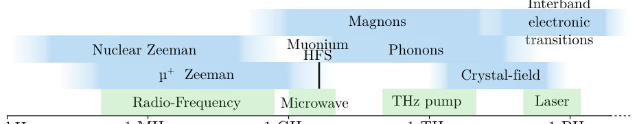
<figcaption class="paper-figure-caption"><b>Fig 4.</b> Figure 4: Excitation frequency and energy scales from kHz to PHz, illustrating representative muon–nuclear, muonium hyperfine structure (HFS), collective, and electronic transitions and the corresponding experimental electromagnetic regimes from Radio-Frequency (RF)46–49 to optical excitation34,50,51 under typical laboratory conditions.</figcaption>
</figure>
<figure class="paper-figure-card">
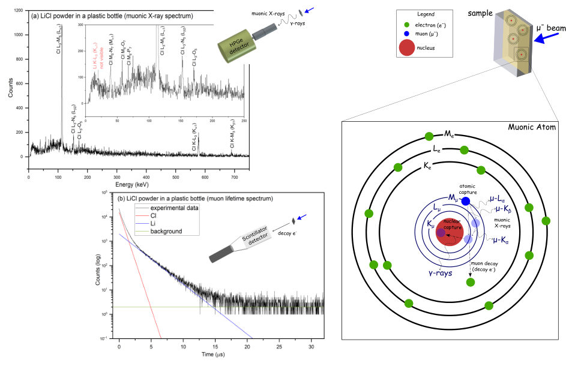
<figcaption class="paper-figure-caption"><b>Fig 5.</b> Figure 5: Pictorial representation of the different quantum processes that take place in a µ−</figcaption>
</figure>
</div>

<p><strong>Summary.</strong> This perspective argues that muon spectroscopy must be viewed through a rigorous quantum mechanical lens to unlock its full potential. It details how the time evolution of the muon's polarization, governed by complex interactions, provides unique information about local quantum states within materials. The paper advocates for moving beyond classical models toward advanced Hamiltonian-based interpretations.</p>
<p><strong>Why it may be interesting.</strong> It directly addresses open quantum systems dynamics by requiring the calculation of expectation values under complex Hamiltonians ($\mathcal{H}_0$), making it highly relevant for those studying spin relaxation and environment coupling in condensed matter.</p>
<details>
<summary>Detailed structure</summary>
<p><strong>Main problem.</strong> The paper aims to establish the quantum mechanical treatment of muon spectroscopy ($\mu$SR) as a key future direction for probing material properties.</p>
<p><strong>Main result.</strong> By treating the muon as a fully quantum particle, $\mu$SR can provide unique insights into local magnetic fields and quantum states in materials that complement classical measurements.</p>
<p><strong>Method.</strong> The analysis focuses on deriving measurable quantities from the time evolution of the muon's polarization governed by its full Hamiltonian ($\mathcal{H}_0$).</p>
<p><strong>Model / system.</strong> The physical system involves implanted muons ($\mu^+$ or $\mu^-$) acting as local probes in various materials. The theoretical framework requires solving the time evolution dictated by the total Hamiltonian, which includes Zeeman, dipole-dipole, quadrupolar, and hyperfine interactions.</p>
<p><strong>Key observables.</strong> Time evolution of muon polarization; relaxation times ($T_1$, $T_2$); X-ray spectra (in related techniques).</p>
<p><strong>Important parameters / regimes.</strong> Muon mass ($rac{1}{9}~m_p$), local magnetic fields, and the coupling constants defining the various Hamiltonian terms.</p>
<p><strong>Assumptions / limitations.</strong> The technique moves beyond classical interpretations; standard models often simplify interactions or assume Gaussian field distributions.</p>
<p><strong>Figures summary.</strong> Figures illustrate the different muon states (interstitial, muonium), compare $\mu$SR's frequency window against other techniques (NMR, ESR), and show energy level diagrams for spin dynamics.</p>
<p><strong>Paper structure.</strong> The paper progresses by first introducing the utility of $\mu$SR as a local probe; it then delves into the quantum mechanical formalism using the Hamiltonian to describe polarization decay; finally, it emphasizes that future progress requires adopting this full quantum treatment over classical approximations.</p>
</details>
<details>
<summary>Abstract</summary>
<p>Although considered a niche technique, muon spectroscopy provides a unique and complementary insight into a range of different materials from hard condensed matter to biological samples and everything in between. In matter, the muon has a mass of $\frac{1}{9}~m_p$ or $207~m_e$, and is a local probe of quantum states that can provide a focus on the bulk properties of materials. While often interpreted in a classical framework, the muon is itself a quantum particle and it is increasingly common for researchers to take account of this when thinking about muon spectroscopy experiments. In this perspective, we focus on the power of using this quantum treatment of muon spectroscopy, which is a key future direction for the technique.</p>
</details>
<p><sub><a href="#top">↑ back to top</a></sub></p>

<p><a id="paper-2608.11021"></a></p>
<h3 id="universal-scaling-of-spatially-extended-zero-modes-in-inhomogeneous-ssh-chains"><a href="http://arxiv.org/abs/2608.11021v1">Universal scaling of spatially extended zero modes in inhomogeneous SSH chains</a></h3>
<p><strong>Authors:</strong> Gilles Parez, Nicolas Crampé, Quentin Labriet, Lucia Morey, Luc Vinet<br>
<strong>Type:</strong> theory · <strong>Category:</strong> other · <strong>PDF:</strong> <a href="https://arxiv.org/pdf/2608.11021v1">https://arxiv.org/pdf/2608.11021v1</a><br>
<strong>Analysis basis:</strong> full PDF text, analyzed in chunks
<strong>Topic relevance:</strong> <code>analog quantum simulation</code> <strong>3/5</strong> · <code>non-equilibrium universality</code> <strong>3/5</strong> · <code>Frenkel-Kontorova</code> <strong>2/5</strong> · <code>Keldysh / 2PI / non-Gaussian methods</code> <strong>1/5</strong> · <code>correlated / nonlocal dissipation</code> <strong>1/5</strong> · <code>driven-dissipative phase transition</code> <strong>1/5</strong></p>
<div class="figure-strip-hint">↔ Scroll figures horizontally</div>
<div class="paper-figures-scroll">
<figure class="paper-figure-card">

<figcaption class="paper-figure-caption"><b>Fig 1.</b> FIG. 1. Spatial profile |Ψ(0) n |2 of the zero mode for the power- law profile with α = 1/4 and p = 1/3. Symbols denote the exact lattice results obtained from Eq. (2) for N = 1000. The solid line is the continuum prediction of Eq. (5), expressed as a function of x/ℓ= n/N. The agreement between the lattice and continuum results is excellent. The corresponding couplings vn and wn are also shown (right axis), illustrating that the zero mode is centred at the interface n0/N = p = 1/3, marked by the vertical dashed line.</figcaption>
</figure>
<figure class="paper-figure-card">

<figcaption class="paper-figure-caption"><b>Fig 2.</b> FIG. 2. Rescaled correlation function ξC(d) as a function of the rescaled distance d/ξ for the power-law and Fermi–Dirac profiles with N = 1000. Symbols denote exact numerical data, and the dashed and solid lines show the algebraic and exponential fits, respectively, while the vertical dashed line indicates d/ξ = 1.</figcaption>
</figure>
<figure class="paper-figure-card">

<figcaption class="paper-figure-caption"><b>Fig 3.</b> FIG. 3. Top: Entanglement entropy S(n) as a function of n/N for the power-law profile with α = 1/4, p = 1/3, and various values of N. Symbols are obtained by exact diago- nalization of the correlation matrix. The vertical dashed line marks the interface at n0/N = p = 1/3, while the horizon- tal dotted line indicates S = log 2. Bottom: Entanglement entropy S(n0) at the interface as a function of ξ for the power- law and Fermi–Dirac profiles. Symbols are obtained by exact diagonalization, and the solid line is a numerical fit.</figcaption>
</figure>
</div>

<p><strong>Summary.</strong> This work analyzes the zero modes in inhomogeneous SSH chains where the transition between gapped phases occurs smoothly. The authors demonstrate that this smoothness causes the zero mode to spread out universally, scaling as $\sqrt{N}$. This emergent length scale dictates a mesoscopic critical region characterized by algebraic decay of correlations and logarithmic entanglement entropy growth.</p>
<p><strong>Why it may be interesting.</strong> The concept of an emergent mesoscopic critical region governed by universal length scales ($\xi \sim \sqrt{N}$) at a topological interface is highly relevant for understanding low-energy physics in engineered quantum materials or superconducting junctions.</p>
<details>
<summary>Detailed structure</summary>
<p><strong>Main problem.</strong> The study investigates how protected zero modes, characteristic of topological phases, behave when the interface between gapped regions is smooth rather than sharp.</p>
<p><strong>Main result.</strong> For smooth interfaces in inhomogeneous SSH chains, the associated zero mode becomes spatially extended with a universal scaling length $\xi \sim \sqrt{N}$, defining a mesoscopic critical region. This leads to algebraic decay of correlations near the interface.</p>
<p><strong>Method.</strong> The analysis combines exact lattice solutions for the single-particle eigenproblem with continuum descriptions derived by promoting discrete hopping parameters to smooth functions, leading to an effective inhomogeneous Dirac Hamiltonian.</p>
<p><strong>Model / system.</strong> The system is based on the Su-Schrieffer-Heeger (SSH) model realized on a 1D bipartite lattice. The inhomogeneity is introduced via smoothly varying hopping amplitudes ($v_n, w_n$), which define the topological interface where the mass term $m(x)$ changes sign.</p>
<p><strong>Key observables.</strong> Zero mode spatial extension ($\xi$), ground-state correlation function decay rate (algebraic vs. exponential), and entanglement entropy scaling near the interface.</p>
<p><strong>Important parameters / regimes.</strong> System size ($N$), lattice spacing ($a$), and parameters defining the smoothness of the hopping profile (e.g., power-law or Fermi-Dirac profiles).</p>
<p><strong>Assumptions / limitations.</strong> The analysis assumes the existence of a well-defined continuum limit, requiring that the lattice couplings are invariant under rescaling to maintain smooth variation.</p>
<p><strong>Figures summary.</strong> Figures compare exact lattice results against continuum predictions for zero mode density and local topological markers ($
u_n$). They also show correlation functions collapsing onto universal scaling forms and entanglement entropy exhibiting logarithmic growth near the interface.</p>
<p><strong>Paper structure.</strong> The paper progresses from defining the SSH Hamiltonian and solving the zero-energy eigenproblem on a discrete lattice. It then derives the continuum limit via scaling arguments, leading to an effective Dirac equation. Finally, it analyzes key observables like correlation functions and entanglement entropy using this continuous description.</p>
</details>
<details>
<summary>Abstract</summary>
<p>Protected zero modes are a hallmark of topological phases of matter and are exponentially localized at sharp interfaces between distinct gapped phases. We investigate how this picture changes for smooth interfaces in a broad class of inhomogeneous Su-Schrieffer-Heeger (SSH) models. Combining an exact lattice solution with an inhomogeneous Dirac description, we show that the associated Jackiw-Rebbi zero mode becomes spatially extended. For arbitrary smooth hopping profiles, its lattice extension universally scales as the square root of the system size, independently of the microscopic details of the interface. This emergent length defines a mesoscopic critical region separating two gapped phases, within which correlations decay algebraically before crossing over to exponential decay. In addition, the entanglement entropy scales as the logarithm of the emergent length near the interface, confirming the interpretation of a mesoscopic critical region. Our results establish a universal critical length governing the low-energy physics of smooth topological interfaces.</p>
</details>
<p><sub><a href="#top">↑ back to top</a></sub></p>

<p><a id="paper-2608.10334"></a></p>
<h3 id="wave-particle-mixedness-redistribution-in-schwarzschild-spacetime"><a href="http://arxiv.org/abs/2608.10334v1">Wave-particle-mixedness redistribution in Schwarzschild spacetime</a></h3>
<p><strong>Authors:</strong> Sumeng Wang, Xiaofen Huang<br>
<strong>Type:</strong> theory · <strong>Category:</strong> other · <strong>PDF:</strong> <a href="https://arxiv.org/pdf/2608.10334v1">https://arxiv.org/pdf/2608.10334v1</a><br>
<strong>Analysis basis:</strong> full PDF text, analyzed in chunks
<strong>Topic relevance:</strong> <code>Keldysh / 2PI / non-Gaussian methods</code> <strong>3/5</strong> · <code>methods for driven-dissipative</code> <strong>3/5</strong> · <code>driven-dissipative phase transition</code> <strong>2/5</strong> · <code>correlated / nonlocal dissipation</code> <strong>1/5</strong> · <code>non-equilibrium universality</code> <strong>1/5</strong> · <code>quantum measurements</code> <strong>1/5</strong></p>
<div class="figure-strip-hint">↔ Scroll figures horizontally</div>
<div class="paper-figures-scroll">
<figure class="paper-figure-card">

<figcaption class="paper-figure-caption"><b>Fig 1.</b> FIG. 1: Wave feature W, particle feature P, and mixedness M versus the Hawking parameter r for ra = rb = r. Panels (a)–(c) show W, P, and M, respectively. The three subplots in each panel correspond to ρAIBI , ρAIBII , and ρAIIBII . The curves are for α = 0.3, 0.6, 0.9. The state ρAIIBI is omitted because it coincides with ρAIBII when ra = rb.</figcaption>
</figure>
<figure class="paper-figure-card">

<figcaption class="paper-figure-caption"><b>Fig 2.</b> FIG. 2: Wave feature and mixedness under the phase damping channel for α = 0.7 and ra = rb = r. Panel (a) shows the wave feature WPD, while panel (b) shows the mixedness MPD, both as functions of the damping coefficient k. In each panel, the three subplots correspond to ρPD AIBI , ρPD AIBII , and ρPD AIIBII . The three curves represent r = π/8, r = π/6, and r = π/5. The particle feature is not plotted because it has no explicit k-dependence. For ra = rb = r, ρPD AIIBI has the same behavior as ρPD AIBII .</figcaption>
</figure>
<figure class="paper-figure-card">

<figcaption class="paper-figure-caption"><b>Fig 3.</b> FIG. 3: Wave feature and mixedness under the phase flip channel for α = 0.6 and ra = rb = r. Panel (a) shows the wave feature WPF, while panel (b) shows the mixedness MPF, both as functions of the damping coefficient k. In each panel, the three subplots correspond to ρPF AIBI , ρPF AIBII , and ρPF AIIBII . The three curves represent r = π/10, r = π/8, and r = π/6. The particle feature is not plotted because it has no explicit k-dependence. For ra = rb = r, ρPF AIIBI has the same behavior as ρPF AIBII .</figcaption>
</figure>
<figure class="paper-figure-card">

<figcaption class="paper-figure-caption"><b>Fig 4.</b> Fig. 3(b) presents the corresponding mixedness. The mixedness also exhibits a symmetric dependence on the damping coefficient k. In contrast to the wave feature, it increases as k varies from 0 to 1/2, reaches its maxi- mum when the wave feature vanishes, and then decreases symmetrically for k &gt; 1/2. This opposite behavior fol- lows from Eq. (B9), where the k-dependent wave feature term enters the mixedness with a negative sign. The variation is more pronounced for ρPF AIBI and ρPF AIBII, but becomes less visible for ρPF AIIBII. Since Eq. (B8) shows</figcaption>
</figure>
<figure class="paper-figure-card">

<figcaption class="paper-figure-caption"><b>Fig 5.</b> FIG. 4: Particle feature and mixedness under the bit flip channel as functions of the Hawking parameter r and the damping coefficient k. Panel (a) shows the particle feature PBF, while panel (b) shows the mixedness MBF. In each panel, the three subplots correspond to ρBF AIBI , ρBF AIBII , and ρBF AIIBII . The wave feature is not plotted because it has no explicit dependence on k. For ra = rb = r, ρBF AIIBI has the same behavior as ρBF AIBII .</figcaption>
</figure>
</div>

<p><strong>Summary.</strong> This paper analyzes the redistribution of wave-particle duality and mixedness for quantum states near a black hole horizon. It models both thermal effects from Hawking radiation and various forms of environmental noise acting on two qubits. The key finding is that while these physical processes significantly alter the distribution of quantum features, they do not violate the fundamental conservation law relating them.</p>
<p><strong>Why it may be interesting.</strong> It provides a concrete example of how fundamental quantum mechanical relationships (like complementarity) are preserved even when subjected to extreme physical processes like Hawking radiation or realistic environmental decoherence.</p>
<details>
<summary>Detailed structure</summary>
<p><strong>Main problem.</strong> The study investigates how wave feature, particle feature, and mixedness are redistributed for two-qubit isotropic states when subjected to Hawking radiation in Schwarzschild spacetime or various environmental decoherence channels.</p>
<p><strong>Main result.</strong> The analysis shows that both Hawking radiation and noise modify the relative weights of these quantum features across different spatial regions but crucially preserve the underlying wave-particle-mixedness triality relation (P+W+M=1).</p>
<p><strong>Method.</strong> The authors use field quantization in curved spacetime, employing Bogoliubov transformations for Hawking effects, and applying Kraus operators to model environmental noise channels.</p>
<p><strong>Model / system.</strong> The system is a two-qubit isotropic state derived from Dirac fields analyzed across the event horizon of a Schwarzschild black hole. The analysis considers reduced density matrices tracing over causally inaccessible modes.</p>
<p><strong>Key observables.</strong> Wave feature (W), Particle feature (P), and Mixedness (M); the triality relation P+W+M=1 is the primary diagnostic tool.</p>
<p><strong>Important parameters / regimes.</strong> Hawking temperature T, Hawking parameter r, and noise strengths k for phase damping, phase flip, and bit flip channels.</p>
<p><strong>Assumptions / limitations.</strong> The analysis assumes the validity of the wave-particle-mixedness triality relation as a consistency check across all physical processes considered.</p>
<p><strong>Figures summary.</strong> Figures illustrate how W, P, and M change as functions of the Hawking parameter r (for Hawking radiation) or the damping coefficient k (for noise channels), showing characteristic redistribution patterns for different reduced states.</p>
<p><strong>Paper structure.</strong> The paper systematically analyzes the effects in two parts: first, investigating Hawking radiation's effect on W, P, and M across horizon sectors; second, analyzing the distinct impacts of phase damping, phase flip, and bit flip noise channels on these features.</p>
</details>
<details>
<summary>Abstract</summary>
<p>The redistribution of the wave feature, particle feature, and mixedness is investigated for two-qubit isotropic states in Schwarzschild spacetime under Hawking radiation and environmental decoherence. It is shown that Hawking radiation changes their relative weights among different horizon regions rather than simply suppressing them. The analysis is further extended to phase damping, phase flip, and bit flip channels. Phase damping monotonically suppresses the wave feature and enhances mixedness, phase flip produces a symmetric death-and-revival behavior of the wave feature, and bit flip mainly reshapes the particle feature and mixedness through diagonal population redistribution. However, although Hawking radiation and channel noise affect the distribution of wave feature, particle feature, and mixedness in the subsystems, the triality relation among them still holds and remains unaffected by thermal and environmental noises.</p>
</details>
<p><sub><a href="#top">↑ back to top</a></sub></p>

<p><a id="paper-2608.10365"></a></p>
<h3 id="symmetrized-block-product-periodic-marginals-in-infinite-translation-invariant-quantum-chains"><a href="http://arxiv.org/abs/2608.10365v1">Symmetrized Block-Product Periodic Marginals in Infinite Translation-Invariant Quantum Chains</a></h3>
<p><strong>Authors:</strong> Xiao Zeng, Kaiyan Yang, Lingxia Zhang, Zizhu Wang<br>
<strong>Type:</strong> theory · <strong>Category:</strong> strongly correlated electrons · <strong>PDF:</strong> <a href="https://arxiv.org/pdf/2608.10365v1">https://arxiv.org/pdf/2608.10365v1</a><br>
<strong>Analysis basis:</strong> full PDF text, analyzed in chunks
<strong>Topic relevance:</strong> <code>methods for driven-dissipative</code> <strong>3/5</strong> · <code>analog quantum simulation</code> <strong>2/5</strong> · <code>quantum measurements</code> <strong>2/5</strong> · <code>Frenkel-Kontorova</code> <strong>1/5</strong> · <code>Keldysh / 2PI / non-Gaussian methods</code> <strong>1/5</strong> · <code>correlated / nonlocal dissipation</code> <strong>1/5</strong></p>
<div class="figure-strip-hint">↔ Scroll figures horizontally</div>
<div class="paper-figures-scroll">
<figure class="paper-figure-card">

<figcaption class="paper-figure-caption"><b>Fig 1.</b> Figure 1: An example of symmetrization when p = 3, r = 2. Ω(3) is a periodic state with period 3. The symmetrized state Ω (3) is one-site TI, and the yellow box shows the symmetrized state ρ[2], which is composed by the reduced density matrices (RDMs) inside σ[3] and the RDM across the boundary.</figcaption>
</figure>
<figure class="paper-figure-card">

<figcaption class="paper-figure-caption"><b>Fig 2.</b> Figure 2: The energy density given by the symmetrized MPS algorithm for the TFI model at h = 1, p = 50, D = 8.</figcaption>
</figure>
<figure class="paper-figure-card">

<figcaption class="paper-figure-caption"><b>Fig 3.</b> Figure 3 shows that the convergence of the variational energy density depends on both the bond dimension and the period p. For small bond dimensions, the sym- metrized MPS optimization is more susceptible to local minima. We therefore repeat the calculation with multi- ple random initializations and report the lowest energy obtained. As the bond dimension increases, this local- minimum issue is no longer observed. In all simulations, convergence is declared when the change in energy be- tween consecutive sweeps is smaller than ε = 10−7. For D = 4 and D = 6, we perform 10 independent runs for each value of p and keep the best result. The convergence pattern is model dependent. For the TFI...</figcaption>
</figure>
<figure class="paper-figure-card">

<figcaption class="paper-figure-caption"><b>Fig 4.</b> Figure 3: The energy error ∆e given by the symmetrized MPS algorithm. (a) TFI model at h = 1, (b) TFI model at h = 0.48, (c) XXZ model at ∆= 1, (d) XXZ model at ∆= 2, (e) XX model, (f) the 232-type model.</figcaption>
</figure>
</div>

<p><strong>Summary.</strong> The paper develops a rigorous mathematical framework to test if local quantum measurements on an infinite chain are consistent with a hidden periodic structure. It uses advanced techniques like SDP relaxations and specialized Matrix Product States to calculate upper bounds on energy densities and diagnose periodicity in models ranging from Ising to XXZ type chains.</p>
<p><strong>Why it may be interesting.</strong> This work provides powerful theoretical tools for analyzing local measurements in complex many-body systems, bridging the gap between experimentally accessible local data and the true global ground state properties of infinite chains.</p>
<details>
<summary>Detailed structure</summary>
<p><strong>Main problem.</strong> The study investigates local reduced density matrices ($
ho[n]$) in infinite translation-invariant quantum chains to determine if they are compatible with an underlying hidden finite-period structure.</p>
<p><strong>Main result.</strong> The developed framework successfully diagnoses expected periodic order in exactly solvable models (like Majumdar-Ghosh) and provides systematically improving variational upper bounds on ground-state energy densities.</p>
<p><strong>Method.</strong> Two complementary methods are employed: a Semidefinite Programming (SDP) relaxation based on block symmetry, and a Symmetrized Matrix Product State (MPS) ansatz for variational bounding.</p>
<p><strong>Model / system.</strong> The work applies to one-dimensional translation-invariant quantum systems, including the Majumdar-Ghosh model, Transverse-Field Ising, XX, and XXZ spin chains. The focus is on characterizing local properties of these infinite chains.</p>
<p><strong>Key observables.</strong> Ground-state energy densities ($\Delta e$) and expectation values for contextuality witnesses ($\langle E 
angle_{TI}$).</p>
<p><strong>Important parameters / regimes.</strong> The period ($p$) of the hidden structure, the bond dimension ($D$) used in MPS, and the size of the local measurement window ($n$).</p>
<p><strong>Assumptions / limitations.</strong> The primary challenge is that exact finite characterizations of admissible reduced states are generally unavailable; approximations rely on periodic extensions (e.g., Periodic-NPA relaxation).</p>
<p><strong>Figures summary.</strong> Figure 1 illustrates the construction of symmetrized marginals for small periods ($p=3, r=2$). Figure 3 compares energy error convergence ($\Delta e$) across different models based on the period $p$.</p>
<p><strong>Paper structure.</strong> The paper introduces the core problem (symmetrized block-product periodic marginals), develops two mathematical tools (SDP and MPS ansatz), benchmarks these methods on several known quantum spin models, and applies them to diagnose periodicity and bound energy/contextuality.</p>
</details>
<details>
<summary>Abstract</summary>
<p>We study local marginals in one-dimensional translation-invariant quantum systems that may hide finite-period structure. Given an $n$-site reduced density matrix, we ask whether it can be obtained by repeating a finite $p$-site block state along the chain and averaging over the $p$ lattice translations. This defines a symmetrized block-product periodic marginal problem, which provides a route both to diagnosing hidden periodic order from local data and to upper bounding ground-state energy densities of infinite translation-invariant local Hamiltonians. We develop two complementary methods. The first is a semidefinite-programming relaxation based on block permutation symmetry and positive partial transpose constraints, which outer-approximates the convex hull of such marginals and yields certified infeasibility tests. The second is a symmetrized matrix product state ansatz, which constructs explicit block-product periodic states and gives variational upper bounds. We benchmark the framework on the Majumdar-Ghosh model, transverse-field Ising, XX, XXZ, and contextuality-related spin models. The results show that the method captures the expected finite-period structure in exactly solvable cases and gives systematically improving variational energies as the period and bond dimension increase. We also formulate a periodic-NPA relaxation for translation-invariant contextuality witnesses and recover the known quantum limits in the tested examples.</p>
</details>
<p><sub><a href="#top">↑ back to top</a></sub></p>

<p><a id="paper-2608.10868"></a></p>
<h3 id="analytical-theory-for-anomalous-diffusion-in-the-anderson-model-with-heavy-tails"><a href="http://arxiv.org/abs/2608.10868v1">Analytical Theory for Anomalous Diffusion in the Anderson Model with Heavy Tails</a></h3>
<p><strong>Authors:</strong> Elizaveta Safonova, Aleksey Lunkin, Mikhail Feigel'man<br>
<strong>Type:</strong> theory · <strong>Category:</strong> disordered systems and neural networks · <strong>PDF:</strong> <a href="https://arxiv.org/pdf/2608.10868v1">https://arxiv.org/pdf/2608.10868v1</a><br>
<strong>Analysis basis:</strong> full PDF text, analyzed in chunks
<strong>Topic relevance:</strong> <code>Keldysh / 2PI / non-Gaussian methods</code> <strong>3/5</strong> · <code>driven-dissipative phase transition</code> <strong>2/5</strong> · <code>analog quantum simulation</code> <strong>1/5</strong> · <code>correlated / nonlocal dissipation</code> <strong>1/5</strong> · <code>methods for driven-dissipative</code> <strong>1/5</strong> · <code>non-equilibrium universality</code> <strong>1/5</strong></p>
<div class="figure-strip-hint">↔ Scroll figures horizontally</div>
<div class="paper-figures-scroll">
<figure class="paper-figure-card">

<figcaption class="paper-figure-caption"><b>Fig 1.</b> FIG. 1. Color map of the normalized scaling exponent ξ(r) as a function of propagation distance for µ = 1.03, where ξD(r) = 1. The figure demonstrates that the subdiffusive regime extends over distances much larger than the mean free path r0. The white region indicates the absence of data. The inset shows a microscopic illustration of the model, where each site is, on average, connected to p0 ≫1 neighboring sites within a distance r0, forming a network with multiple broadly distributed connections to nearby sites. The thickness of each red line represents the amplitude of the corresponding hopping term tnm.</figcaption>
</figure>
<figure class="paper-figure-card">

<figcaption class="paper-figure-caption"><b>Fig 2.</b> FIG. 2. Top: Typical displacement rtyp(t), normalized over hopping range r0, obtained from Eqs. (8, 9, and 11) for var- ious values of µ. Dashed lines show the long-time diffusive asymptotic rtyp ∝ √</figcaption>
</figure>
<figure class="paper-figure-card">

<figcaption class="paper-figure-caption"><b>Fig 3.</b> FIG. 3. Frequency-dependent conductivity scaling exponent α(ω) ≡ d ln σ d ln ω for several values of the heavy-tail exponent µ. The extended intermediate-frequency regime exhibits an apparent power-law behavior, while the low-frequency limit approaches the diffusive dc conductivity.</figcaption>
</figure>
<figure class="paper-figure-card">

<figcaption class="paper-figure-caption"><b>Fig 4.</b> FIG. 4. Mean-square displacement ⟨r2(t)⟩versus rescaled time Γ0t for the unitary (β = 2) power-law hopping model in 3D, Eq. (2), with µ = 1.6, W = 1, r0 = 4.5, p0 = 200, and h0 = 0.07, for several system sizes L, averaged over n disorder realizations. The simulation data are compared with the full prediffusive theory obtained from Eqs. (8)–(11) and with the asymptotic diffusive law ⟨r2(t)⟩= 6Dt. The short- and intermediate-time dynamics exhibits a preasymptotic en- hancement over diffusion and crosses over to diffusive scaling at long times.</figcaption>
</figure>
</div>

<p><strong>Summary.</strong> This paper develops an analytical theory demonstrating that heavy-tailed hopping amplitudes in the noninteracting Anderson model cause robust subdiffusive transport over an intermediate time scale. By solving complex transport equations using advanced field-theoretic methods, the authors establish a single-particle mechanism for these anomalies, providing a critical tool to distinguish disorder effects from many-body interactions.</p>
<p><strong>Why it may be interesting.</strong> This work is highly relevant because it provides a rigorous analytical benchmark for understanding transport anomalies in disordered quantum systems. The separation of disorder-driven effects from interaction-induced ones is crucial for interpreting experimental results in AMO physics, especially concerning localization transitions.</p>
<details>
<summary>Detailed structure</summary>
<p><strong>Main problem.</strong> The paper develops an analytical theory to understand anomalous transport (subdiffusion) in the Anderson model when hopping amplitudes are governed by heavy-tailed distributions.</p>
<p><strong>Main result.</strong> It shows that rare hopping processes alone can induce a robust, intermediate subdiffusive regime, providing a single-particle mechanism distinct from interaction effects. This anomaly eventually crosses over to conventional diffusion at long times.</p>
<p><strong>Method.</strong> The analysis employs advanced theoretical techniques, including solving transport equations by mapping the problem onto the Lévy–Rosenzweig–Porter (LRP) matrix ensemble and utilizing supersymmetric field-theoretical formalisms.</p>
<p><strong>Model / system.</strong> The system is a noninteracting Anderson model on a lattice with diagonal disorder ($u_n$) and hopping amplitudes ($t_{nm}$) following heavy-tailed power laws. The Hamiltonian describes single-particle dynamics in the presence of strong, broad disorder.</p>
<p><strong>Key observables.</strong> Mean-square displacement $\langle r^2(t) 
angle$, the effective subdiffusive exponent $\xi(t)$, and frequency-dependent conductivity $\sigma(\omega)$.</p>
<p><strong>Important parameters / regimes.</strong> The tail exponent $\mu$ of the hopping amplitudes ($P_\mu(|t|) \propto |t|^{-\mu}$), which controls the transition between diffusive ($\mu=2$) and localized ($\mu 	o 1$) regimes.</p>
<p><strong>Assumptions / limitations.</strong> The theory relies on analytical solutions to transport equations, approximations like the saddle-point method in field theory, and assumes that the anomalous regime is a parametrically extended crossover rather than a true asymptotic phase.</p>
<p><strong>Figures summary.</strong> Figures illustrate the scaling exponent $\xi(r)$ showing subdiffusion extending beyond the mean free path for small $\mu$, and compare calculated $\langle r^2(t) 
angle$ with numerical simulations, confirming preasymptotic enhancement over diffusion.</p>
<p><strong>Paper structure.</strong> The paper progresses by defining the model parameters (heavy tails, Anderson Hamiltonian), developing the mathematical framework using LRP ensembles or supersymmetric field theory, deriving expressions for correlation functions and conductivity, and finally analyzing the time/frequency dependence to characterize the crossover between anomalous subdiffusion and normal diffusion.</p>
</details>
<details>
<summary>Abstract</summary>
<p>We develop an analytical theory of anomalous transport in a noninteracting Anderson model with heavy-tailed hopping amplitudes. The broad distribution of hopping amplitudes gives rise to an extended intermediate-time regime with a subdiffusive effective exponent, despite the absence of interactions or genuine many-body effects. By solving the transport equations analytically, we derive the time dependence of the mean-square displacement and identify a continuous crossover from an intermediate anomalous regime to asymptotically diffusive transport. As the localization transition is approached, the spatial extent of the subdiffusive window diverges parametrically, while the crossover to conventional diffusion remains finite in units of $Γ_0^{-1}$. This produces an increasingly broad anomalous transport regime in space that can closely resemble Griffiths-type transport observed near the many-body localization transition. Our results demonstrate that rare hopping processes alone provide a microscopic single-particle mechanism for robust transport anomalies, establishing an analytical benchmark for distinguishing interaction-induced effects from disorder-driven dynamics.</p>
</details>
<p><sub><a href="#top">↑ back to top</a></sub></p>

<p><a id="paper-2608.10059"></a></p>
<h3 id="cell-natural-orbitals-in-quantum-materials"><a href="http://arxiv.org/abs/2608.10059v1">Cell Natural Orbitals in Quantum Materials</a></h3>
<p><strong>Authors:</strong> Harshitra Mahalingam, Nishchhal Verma, Daniel Muñoz-Segovia, Raquel Queiroz<br>
<strong>Type:</strong> theory · <strong>Category:</strong> strongly correlated electrons · <strong>PDF:</strong> <a href="https://arxiv.org/pdf/2608.10059v1">https://arxiv.org/pdf/2608.10059v1</a><br>
<strong>Analysis basis:</strong> full PDF text, analyzed in chunks
<strong>Topic relevance:</strong> <code>analog quantum simulation</code> <strong>3/5</strong> · <code>methods for driven-dissipative</code> <strong>3/5</strong> · <code>Keldysh / 2PI / non-Gaussian methods</code> <strong>2/5</strong> · <code>quantum measurements</code> <strong>1/5</strong></p>
<div class="figure-strip-hint">↔ Scroll figures horizontally</div>
<div class="paper-figures-scroll">
<figure class="paper-figure-card">

<figcaption class="paper-figure-caption"><b>Fig 1.</b> FIG. 1. Schematic overview of the cell natural orbital construction. Starting from a target band projector P, the projector is restricted to a single real-space unit cell through the local projector Π to form the unit-cell one-particle reduced density matrix L = ΠPΠ. Diagonalization yields the cell natural orbitals (CNOs) |τa⟩and their occupations λa. The CNOs provide compact local orbitals labeled by their symmetry and Wyckoff position, while the occupations rank their importance within the target bands. Candidate tight-binding models are constructed by selecting CNO subsets, testing their ability to span the target bands through the overlap matrix Sk, and optimizing their total spectral...</figcaption>
</figure>
<figure class="paper-figure-card">

<figcaption class="paper-figure-caption"><b>Fig 2.</b> FIG. 2. a) Triangular-lattice three-orbital monolayer TMD model. The 1a Wyckoff position where the d orbitals are centered is indicated by the white circles. These d orbitals can be combined into a basis of three sp2-like orbitals. Black crosses mark the 1c Wannier centers, where the sp2 orbitals from three neighboring cells constructively interfere. The two shaded cells show the partition choices. b-d) CNOs and en- velope function of the valence band of monolayer WSe2 for a-b) 1a-centered unit cell, c-d) 1c-centered unit cell. In a) and c), the band structure of the 3-band model is colored by the overlaps |⟨ukn|τa⟩| for each CNO. b) and d) show the en- velope functions sa,k over the...</figcaption>
</figure>
<figure class="paper-figure-card">

<figcaption class="paper-figure-caption"><b>Fig 3.</b> FIG. 3. a) CNO weights λa for the top band of the spin- less BHZ model. The topological transition occurs at ∆= 2, shown by the vertical dashed line. b) Absolute value of the envelope function of the dominant CNO |sa=1| along the Bril- louin zone for the left: C = 1 regime and right: C = 0 regime. In the C = 1 regime, sa=1 goes to zero at the M points, while in the C = 0 case, the envelope function is finite everywhere. c) band structure along a high-symmetry path in left: the C = 1 regime and right: the C = 0 regime. The points are colored by CNO weights obtained from the UC-1pRDM of the top band.</figcaption>
</figure>
<figure class="paper-figure-card">

<figcaption class="paper-figure-caption"><b>Fig 4.</b> FIG. 4. a) CNO occupation spectra for the lowest band of a single parabolic band in a triangular moir´e potential as a function of scaled unit-cell center rc. The inset shows the real- space potential V (r) and three highlighted partition centers. b) Minimum value of the dominant envelope function |s1,k| as a function of rc, with representative real-space profiles of the leading CNO.</figcaption>
</figure>
<figure class="paper-figure-card">

<figcaption class="paper-figure-caption"><b>Fig 5.</b> FIG. 5. a), c) CNO occupations λq a for the top two bands of continuum tWSe2 as a function of twist angle θ for partition centers q = MM and q = MX, respectively. b), d) Represen- tative real-space CNO profiles in the topological regime for the two partitions. The leading CNO for the MM-centered partition localizes near the MM stacking region, while sub- leading modes carry weight on the surrounding MX and XM regions.</figcaption>
</figure>
</div>

<p><strong>Summary.</strong> The paper presents Cell Natural Orbitals (CNOs) as a systematic technique to derive optimal local orbital descriptions directly from the band structure of quantum materials. By analyzing the unit-cell reduced density matrix, CNOs quantify orbital content and entanglement across unit cells. This method offers a robust way to build minimal effective models for studying correlated and topological phenomena in systems like moiré TMDs.</p>
<p><strong>Why it may be interesting.</strong> This work provides a powerful theoretical framework for mapping complex Bloch wavefunctions onto minimal, localized orbital bases, which is crucial input for subsequent correlated electron simulations (e.g., Hubbard models) used in AMO or strongly correlated physics.</p>
<details>
<summary>Detailed structure</summary>
<p><strong>Main problem.</strong> The primary goal is to develop a systematic method to identify local degrees of freedom (orbitals) that accurately capture the band geometry and charge density of target bands in complex quantum materials.</p>
<p><strong>Main result.</strong> The authors introduce Cell Natural Orbitals (CNOs), derived from the unit-cell one-particle reduced density matrix, which provide an intrinsic, symmetry-respecting basis for constructing optimal local models.</p>
<p><strong>Method.</strong> The methodology centers on calculating and diagonalizing the Unit-Cell One-Particle Reduced Density Matrix (UC-1pRDM) to extract CNOs and their associated occupation numbers.</p>
<p><strong>Model / system.</strong> The work applies to correlated quantum matter, particularly focusing on moiré materials like twisted bilayer WSe2, where simple real-space descriptions of topological bands are challenging.</p>
<p><strong>Key observables.</strong> CNO eigenvalues ($\lambda_a$) quantify orbital occupation and unit-cell entanglement; the method also analyzes symmetry constraints via irreducible representations (irreps).</p>
<p><strong>Important parameters / regimes.</strong> Twist angle (in moiré systems), band symmetries, and the choice of real-space partition are critical parameters.</p>
<p><strong>Assumptions / limitations.</strong> The core assumption is that a suitable real-space partition exists to define the UC-1pRDM; the method aims to overcome limitations in traditional Wannierization techniques regarding topological obstructions.</p>
<p><strong>Figures summary.</strong> Figures schematically illustrate the construction using $L = \Pi P \Pi$ leading to CNOs and occupations, and show how different unit-cell partitions yield distinct CNOs and envelope functions over the Brillouin zone for TMD examples.</p>
<p><strong>Paper structure.</strong> The paper systematically introduces the UC-1pRDM as a tool to derive local orbitals from the band manifold itself, detailing the mathematical construction, analyzing physical diagnostics like entanglement entropy, and demonstrating its utility in modeling moiré systems.</p>
</details>
<details>
<summary>Abstract</summary>
<p>Understanding correlated quantum matter starts with an accurate model of the single-particle states that interact at low energies: their dispersion, band geometry, orbital content and charge density. In many cases, notably the topological bands of moire materials, it is not straightforward to find a real-space description with a few local orbitals that accomplishes this task. Here we provide a systematic way to identify the local degrees of freedom that best capture the band geometry and charge density of any chosen set of bands. We use the unit-cell one-particle reduced density matrix (UC-1pRDM), obtained by restricting the projector onto the target bands to a single unit cell. Its eigenstates, which we call cell natural orbitals (CNOs), form a local, symmetric basis uniquely determined by the Bloch wavefunctions and the choice of real-space partition. Their eigenvalues measure the occupation of each CNO in the target bands, quantifying entanglement across unit-cell boundaries and the importance of multi-orbital character. A set of CNOs that maximizes total spectral weight and reproduces the target band symmetries provides optimal trial states for Wannierization. We exemplify this by constructing a lattice model for twisted bilayer WSe$_2$ that tracks the orbital content across twist angles.</p>
</details>
<p><sub><a href="#top">↑ back to top</a></sub></p>

<p><a id="paper-2608.11004"></a></p>
<h3 id="influence-of-interactions-on-the-chiral-effect-in-math373math-dirac-semimetal"><a href="http://arxiv.org/abs/2608.11004v1">Influence of interactions on the chiral effect in $1D$ Dirac semimetal</a></h3>
<p><strong>Authors:</strong> Maksim Ulybyshev, M. A. Zubkov<br>
<strong>Type:</strong> theory · <strong>Category:</strong> strongly correlated electrons · <strong>PDF:</strong> <a href="https://arxiv.org/pdf/2608.11004v1">https://arxiv.org/pdf/2608.11004v1</a><br>
<strong>Analysis basis:</strong> full PDF text, analyzed in chunks
<strong>Topic relevance:</strong> <code>analog quantum simulation</code> <strong>3/5</strong> · <code>Frenkel-Kontorova</code> <strong>1/5</strong> · <code>Keldysh / 2PI / non-Gaussian methods</code> <strong>1/5</strong> · <code>methods for driven-dissipative</code> <strong>1/5</strong></p>
<div class="figure-strip-hint">↔ Scroll figures horizontally</div>
<div class="paper-figures-scroll">
<figure class="paper-figure-card">

<figcaption class="paper-figure-caption"><b>Fig 1.</b> FIG. 1: Model 1. Spectral functions λ(ω) and σ(ω) in the absence of interactions.</figcaption>
</figure>
<figure class="paper-figure-card">

<figcaption class="paper-figure-caption"><b>Fig 2.</b> FIG. 2: Model 1. Spectral functions λ(ω) and σ(ω) in the presence of interactions at U = 1.0.</figcaption>
</figure>
<figure class="paper-figure-card">

<figcaption class="paper-figure-caption"><b>Fig 3.</b> FIG. 3: Model 1. Spectral functions λ(ω) and σ(ω) in the presence of interactions at U = 4.0.</figcaption>
</figure>
<figure class="paper-figure-card">

<figcaption class="paper-figure-caption"><b>Fig 4.</b> FIG. 5: Model 1. Spectral function A(ω, π) at the Fermi point position k = π in the presence of interactions at U = 1.0 and β = 4 .</figcaption>
</figure>
<figure class="paper-figure-card">

<figcaption class="paper-figure-caption"><b>Fig 5.</b> FIG. 4: Model 1. Spectral function A(ω, π) at the Fermi point position k = π in the presence of interactions at U = 1.0 at β = 20.</figcaption>
</figure>
</div>

<p><strong>Summary.</strong> This work uses Quantum Monte Carlo simulations to study the 1D Dirac semimetal model coupled with local Hubbard interactions. The primary goal was to determine if these strong correlations destroy the chiral effect, which links axial charge response to electrical conductivity. The key finding is that this fundamental proportionality remains robust, suggesting a topological origin independent of the Mott insulating state.</p>
<p><strong>Why it may be interesting.</strong> While focused on condensed matter topology, the robustness of a topological response (the chiral effect) against strong correlation effects is highly relevant to understanding emergent phenomena in strongly correlated quantum materials that might be modeled using techniques applicable to AMO systems.</p>
<details>
<summary>Detailed structure</summary>
<p><strong>Main problem.</strong> The study investigates how local Hubbard-type interactions affect the chiral effect—a relationship between axial charge density response and electrical conductivity—in a 1D Dirac semimetal.</p>
<p><strong>Main result.</strong> The proportionality characterizing the chiral effect remains unchanged even when strong local Hubbard interactions drive the system into a Mott insulating phase, suggesting the effect is not renormalized by these interactions.</p>
<p><strong>Method.</strong> Numerical Quantum Monte Carlo (QMC) simulations are employed to calculate static response functions ($\lambda(0)$ and $\sigma(0)$) for the interacting model.</p>
<p><strong>Model / system.</strong> The system is based on the Su-Schrieffer–Heeger (SSH) model, extended by adding local Hubbard interactions ($H_{	ext{Hub}}$). The analysis compares non-interacting behavior to regimes where strong correlations are present.</p>
<p><strong>Key observables.</strong> Axial charge density response ($\lambda(\omega)$), electrical conductivity ($\sigma(\omega)$), and the relationship $
ho_5 \propto j$.</p>
<p><strong>Important parameters / regimes.</strong> Interaction strength ($U$), inverse temperature ($eta$), and system dimensionality (1D). The study examines transitions into Mott insulating regimes.</p>
<p><strong>Assumptions / limitations.</strong> The analysis relies on linear response theory and assumes that the chiral effect's robustness suggests a possible topological origin, even when approximations might break down in deep insulating states.</p>
<p><strong>Figures summary.</strong> Figures show comparisons of $\lambda(\omega)$ and $\sigma(\omega)$ for varying interaction strengths ($U$) in Model 1 (SSH+Hubbard) and Model 2 (spinless electrons+Hubbard), demonstrating the persistence of the proportionality relation across different correlation regimes.</p>
<p><strong>Paper structure.</strong> The paper first establishes the non-interacting chiral effect using the SSH model. It then introduces local Hubbard interactions via QMC simulations, systematically testing if the key relationship ($
ho_5 \propto j$) survives as $U$ increases and the system approaches insulating states.</p>
</details>
<details>
<summary>Abstract</summary>
<p>We consider the 1D Su-Schrieffer-Heeger (SSH) model. It was recently shown that, for the noninteracting model in its Dirac semimetal phase, the linear response of the axial charge density to an external electric field is proportional to the electrical conductivity in the presence of finite dissipation, with the proportionality factor determined by the coupling constants. This relation may be viewed as a manifestation of the chiral effect, which is a dimensional reduction of the 3D chiral magnetic effect. In the present work, we investigate the same model in the presence of two versions of local Hubbard-type interactions using numerical Quantum Monte Carlo simulations. We find, within the numerical resolution and for the parameters studied, that, even in the regime where sufficiently strong interactions drive the system into a Mott insulating phase, the proportionality between the induced axial charge density and the electrical conductivity remains unchanged. This result indicates that the chiral effect is not renormalized by local Hubbard interactions.</p>
</details>
<p><sub><a href="#top">↑ back to top</a></sub></p>

<p><a id="paper-2608.10350"></a></p>
<h3 id="observation-geometry-for-uncertainty-aware-hamiltonian-inference-and-experimental-design-in-quantum-magnets"><a href="http://arxiv.org/abs/2608.10350v1">Observation geometry for uncertainty-aware Hamiltonian inference and experimental design in quantum magnets</a></h3>
<p><strong>Authors:</strong> Roy Liu, Venugopal Ranganathan, David Dahlbom, Shizhou Xu, Tianyu Zhang, Yuan Ni, Daniel M. Pajerowski, Garrett Granroth, Thomas Strohmer, Matthew B. Stone, Andrew F. May, Mark D. Lumsden, Joshua J. Turner, Yongqiang Cheng, Zhantao Chen<br>
<strong>Type:</strong> both · <strong>Category:</strong> strongly correlated electrons · <strong>PDF:</strong> <a href="https://arxiv.org/pdf/2608.10350v1">https://arxiv.org/pdf/2608.10350v1</a><br>
<strong>Analysis basis:</strong> full PDF text, analyzed in chunks
<strong>Topic relevance:</strong> <code>quantum measurements</code> <strong>3/5</strong> · <code>analog quantum simulation</code> <strong>2/5</strong> · <code>Keldysh / 2PI / non-Gaussian methods</code> <strong>1/5</strong></p>
<div class="figure-strip-hint">↔ Scroll figures horizontally</div>
<div class="paper-figures-scroll">
<figure class="paper-figure-card">

<figcaption class="paper-figure-caption"><b>Fig 1.</b> FIG. 1. Multimodal inelastic neutron scattering (INS) measurements and Hamiltonian-conditioned AI sur- rogate model. (a) Incident neutrons scatter from the sample and are recorded by a detector array, sampling a subset of the four-dimensional scattering space (Q, ω) for single-crystal measurements or a bounded region in (|Q|, ω) for powder mea- surements. (b) Experimental control variables and the corresponding measurement coverage. The upper panel illustrates the accessible (Q, ω) region for different single-crystal sample orientations, while the lower panel shows the accessible (|Q|, ω) region for different incident neutron energies in powder measurements. (c) AI surrogate model based on...</figcaption>
</figure>
<figure class="paper-figure-card">

<figcaption class="paper-figure-caption"><b>Fig 2.</b> FIG. 2. Observation landscapes and local parameter identifiability across INS modalities. a, Local observation landscape for the single-crystal INS modality, centered at the reference Hamiltonian θref. The corner plot shows two-parameter slices of the spectral-discrepancy landscape between the reference spectrum, S(Q, ω; θref), and spectra generated by perturbed Hamiltonians, S(Q, ω; θ). Circular markers indicate θref. In the (J1a, J1b) subspace, the solid and dashed lines denote pertur- bations along the eigenvectors, v⊥and v∥, of the local observation metric tensor G, with eigenvalues satisfying λ⊥≥λ∥. These directions correspond to the local stiff and sloppy directions in Hamiltonian...</figcaption>
</figure>
<figure class="paper-figure-card">

<figcaption class="paper-figure-caption"><b>Fig 3.</b> FIG. 3. Bayesian experimental design and multimodal Hamiltonian inference enabled by AI surrogates. a, Adap- tive experimental design on orientation ψ for single-crystal INS without powder-derived prior information. The orange curve shows the sequence of selected sample orientations ψ for a representative simulated experiment generated from S(Q, ω; θref) with Poisson noise. The heatmap shows the average predictive-variance utility over 10 simulated experiments with ground-truth Hamiltonians sampled from the initial prior. b, Adaptive experimental design on orientation ψ for single-crystal INS initialized with a posterior obtained from powder INS measurements. Compared with panel (a), the...</figcaption>
</figure>
<figure class="paper-figure-card">

<figcaption class="paper-figure-caption"><b>Fig 4.</b> FIG. 4. Validation with experimental multimodal INS data. a, Posterior distributions inferred from multimodal INS measurements with (red) and without (blue) the exchange-parameter constraints J2a = J2b and J3a = J3b. The corner plot shows the final posterior distributions and parameter correlations, while the diagonal panels show the corresponding marginal posterior distributions. Black crosses and dashed vertical lines denote the reference Hamiltonian parameters θref, and horizontal error bars indicate the corresponding one-standard-deviation uncertainties reported in Ref. 3. b, Pearson correlation coefficients (PCCs) for powder and single-crystal INS evaluated using 2,048 samples drawn...</figcaption>
</figure>
</div>

<p><strong>Summary.</strong> This work presents an AI-enabled framework that tackles the difficult inverse problem of determining quantum magnetic interactions from experimental spectra. By treating different measurements (single-crystal vs. powder INS) as geometric constraints on the parameter space, it quantifies which interactions are uniquely identifiable and guides adaptive data collection strategies for improved characterization.</p>
<p><strong>Why it may be interesting.</strong> The rigorous quantification of parameter identifiability via geometric constraints provides a powerful systematic tool for guiding future experiments in strongly correlated materials, moving beyond simple fitting to understanding measurement limitations.</p>
<details>
<summary>Detailed structure</summary>
<p><strong>Main problem.</strong> The core challenge is determining microscopic magnetic interactions (Hamiltonian parameters) from complex, multimodal spectroscopic data, as the inverse problem is often ill-posed.</p>
<p><strong>Main result.</strong> The proposed framework successfully performs uncertainty-aware Hamiltonian inference by quantifying how different measurement modalities constrain the parameter space using observation geometry.</p>
<p><strong>Method.</strong> It employs an AI surrogate model (INRs) trained on simulated spectra to map Hamiltonian parameters to measured spectral data, integrating this with Bayesian inference.</p>
<p><strong>Model / system.</strong> The study focuses on quantum magnets, specifically $    ext{NiPS}_3$, modeled by a spin Hamiltonian involving exchange couplings and anisotropies. Measurements utilize Inelastic Neutron Scattering (INS) from both single-crystal and powder samples.</p>
<p><strong>Key observables.</strong> Dynamical structure factor $S(Q, \omega)$, inferred Hamiltonian parameters ($ heta$), spectral distinguishability metrics, and the local/global Gram matrix characterizing parameter sensitivity.</p>
<p><strong>Important parameters / regimes.</strong> Hamiltonian coupling constants ($J_{ij}, A_x, A_z$) defining the magnetic interactions; momentum transfer $\mathbf{Q}$ and energy $\omega$.</p>
<p><strong>Assumptions / limitations.</strong> The framework assumes that spectral distinguishability is governed by the geometry induced by the forward map ($ heta 
ightarrow S$), rather than Euclidean distance in parameter space. Source separation for powder data introduces model-dependent estimation.</p>
<p><strong>Figures summary.</strong> Figures illustrate the setup of INS measurements (single-crystal vs. powder), the AI surrogate architecture, and detailed spectral discrepancy maps showing how different measurement modalities constrain the Hamiltonian parameters via geometry analysis.</p>
<p><strong>Paper structure.</strong> The paper first establishes the ill-posed nature of inverse problems in quantum magnetism. It then introduces the AI framework using INRs to model spectra from a given Hamiltonian. The core methodology involves characterizing parameter uncertainty through observation geometry (Gram matrix) and demonstrating its application on $  ext{NiPS}_3$ data, culminating in adaptive experimental design strategies.</p>
</details>
<details>
<summary>Abstract</summary>
<p>Determining microscopic interactions from spectroscopic and scattering measurements is central to understanding quantum materials, yet it often remains unclear which interactions can be reliably revealed by the available experimental data and how additional experimental modalities should be designed to resolve the remaining ambiguities. Here we present an artificial intelligence-enabled framework for uncertainty-aware Hamiltonian inference and adaptive experimental design. By combining Hamiltonian-conditioned neural surrogates with Bayesian inference and observation geometry, the framework characterizes how measurements constrain Hamiltonian parameter space, quantifies the identifiability of microscopic interactions, and propagates posterior uncertainty directly in the physical Hamiltonian parameter space rather than an abstract learned representation. Using multimodal powder and single-crystal inelastic neutron scattering measurements of the quantum magnet NiPS$_{3}$, we demonstrate physically interpretable Hamiltonian inference, modality-aware uncertainty quantification, and adaptive experimental design. The framework provides a general strategy for uncertainty-aware microscopic characterization and multimodal experimental design across quantum materials.</p>
</details>
<p><sub><a href="#top">↑ back to top</a></sub></p>

<p><a id="paper-2608.10231"></a></p>
<h3 id="some-features-of-high-temperature-superconductivity-on-flat-bands"><a href="http://arxiv.org/abs/2608.10231v1">Some features of high-temperature superconductivity on flat bands</a></h3>
<p><strong>Authors:</strong> V. R. Shaginyan, A. Z. Msezane, S. A. Artamonov<br>
<strong>Type:</strong> theory · <strong>Category:</strong> strongly correlated electrons · <strong>PDF:</strong> <a href="https://arxiv.org/pdf/2608.10231v1">https://arxiv.org/pdf/2608.10231v1</a><br>
<strong>Analysis basis:</strong> full PDF text, analyzed in chunks
<strong>Topic relevance:</strong> <code>Keldysh / 2PI / non-Gaussian methods</code> <strong>3/5</strong> · <code>analog quantum simulation</code> <strong>1/5</strong> · <code>methods for driven-dissipative</code> <strong>1/5</strong> · <code>quantum measurements</code> <strong>1/5</strong></p>
<div class="figure-strip-hint">↔ Scroll figures horizontally</div>
<div class="paper-figures-scroll">
<figure class="paper-figure-card">

<figcaption class="paper-figure-caption"><b>Fig 1.</b> FIG. 1: Experimental data illustrating the validity of Eq. (10). (a) Data (shown as squares) of the dependence of the average Fermi velocity VF on the critical temperature Tc for graphene (MATBG) [25]. The downward arrows indicate that VF ≤V0, where V0 is the maximum value, indicated by the red square. The theoretical explanation is represented by the solid straight line. (b) The Figure is adapted from [29] and shows the experimental dependence of the superconducting gap ∆on the integrated local density of states collected on the high-Tc superconductor Bi2Sr2CaCu2O8+x. Here x is the oxygen doping concentration. Darker colors correspond to more data points with the same integrated local...</figcaption>
</figure>
</div>

<p><strong>Summary.</strong> This work theoretically explains how high-temperature superconductivity can emerge in systems with flat energy bands, even when repulsive interactions are dominant. It proposes a 'self-help' mechanism where the superconducting pairing itself deforms the band structure, ensuring that supercurrents and superfluid weight remain finite. The findings align well with experimental observations in heavy-fermion and high-$T_c$ superconductors.</p>
<p><strong>Why it may be interesting.</strong> The concept of a superconducting state actively modifying its own underlying electronic structure (band deformation) is a rich topic relevant to understanding emergent order parameters in complex quantum materials.</p>
<details>
<summary>Detailed structure</summary>
<p><strong>Main problem.</strong> The paper investigates how flat bands can induce high-temperature superconductivity, even when repulsive pairing interactions are present.</p>
<p><strong>Main result.</strong> Superconductivity in the presence of flat bands is sustained by a 'self-help' mechanism where the superconducting state deforms the band, preventing the superfluid weight and supercurrent from vanishing.</p>
<p><strong>Method.</strong> The analysis adapts standard BCS theory formalism to the specific physical context of flat bands formed in strongly correlated Fermi systems.</p>
<p><strong>Model / system.</strong> The system involves strongly correlated Fermi gases exhibiting topological fermion condensation quantum phase transitions (FCQPT), leading to localized states forming flat bands at the chemical potential.</p>
<p><strong>Key observables.</strong> Critical temperature ($T_c$), superfluid weight ($D_s$), effective mass ($M^*$), superconducting gap ($\Delta$), and Fermi velocity ($V_F$).</p>
<p><strong>Important parameters / regimes.</strong> Repulsive pairing interaction strength ($\lambda_0 > 0$); the condition for flat bands ($\varepsilon(p) - \mu = 0$).</p>
<p><strong>Assumptions / limitations.</strong> The primary assumption is that the superconducting state actively modifies the band structure (tilting it) to maintain finite superfluid properties, overcoming initial theoretical predictions of collapse.</p>
<p><strong>Figures summary.</strong> Figure 1 shows experimental data for $V_F$ vs. $T_c$ in graphene and $\Delta$ vs. integrated LDOS ($\propto 1/V_F$) for high-$T_c$ superconductors, both consistent with the derived theoretical relationship.</p>
<p><strong>Paper structure.</strong> The paper first addresses the apparent contradiction where flat bands suggest zero superfluid weight; it then introduces the 'self-help' mechanism via BCS formalism to show finite $D_s$; finally, it discusses how this framework explains high-$T_c$ behavior even with repulsive interactions and relates findings to experimental data.</p>
</details>
<details>
<summary>Abstract</summary>
<p>In this letter, we examine how the presence of flat band leads to the formation of a high-temperature superconductor even in the case of repulsive pairing interactions. We also show that in the case of flat bands, the high-temperature superconducting state deforms the flat band, tilting it and making the effective mass finite. As a result, neither the superfluid weight nor the supercurrent disappear. Our results are in good agreement with experimental data.</p>
</details>
<p><sub><a href="#top">↑ back to top</a></sub></p>
<hr>
<p>
<a href="index.html">← Index</a>
 · <a href="papers_01.html">← Previous</a> · <a href="papers_03.html">Next →</a>
</p>
<hr>

</body>
</html>
